⚡
 ⚡
⚡
Hàng nghìn cửa hàng xăng dầu có thể trở thành điểm phục vụ xe điện: TC Group bắt tay liên doanh có Petrolimex, Xuân Cầu, Selex Motors
Hàng nghìn cửa hàng xăng dầu có thể trở thành điểm phục vụ xe điện: TC Group bắt tay liên doanh có Petrolimex, Xuân Cầu, Selex Motors Phương Vy | 16/09/2026 20:31 PM | Kinh doanh Theo dõi Cafebiz.vn trên Tập đoàn Thành C
🔥
Giá xăng dầu hôm nay 16/9: Thế giới sát 110 USD/thùng, trong nước chờ điều chỉnh
Giá dầu thế giới hôm nay Giá dầu quốc tế trong phiên giao dịch 15/9 tiếp đà tăng cao. Giá dầu Brent hướng mốc 110 USD/thùng. Chốt phiên giao dịch 15/9, theo Reuters, giá dầu Brent tăng 2,9%, lên mức 108,8 USD/thùng.
🔥
Doanh nghiệp Việt tìm đến AI quản lý dòng tiền giữa áp lực tỷ giá, lãi suất
Trong bối cảnh tỷ giá, lãi suất và chuỗi cung ứng còn nhiều biến động, doanh nghiệp Việt Nam ngày càng quan tâm ứng dụng AI vào dự báo dòng tiền, song thiếu nhân lực chuyên môn đang là rào cản lớn nhất. Công nghệ đang là
🔥
🔥
VinFast nhận khoản tài trợ 200 triệu USD từ 3 định chế tài chính hàng đầu thế giới
TIN MỚI Ngày 16/9/2026, SACE, Cơ quan Tín dụng Xuất khẩu của Italy thuộc Bộ Kinh tế và Tài chính Italy, vừa công bố khoản tài trợ trị giá 200 triệu USD cho VinFast Việt Nam, công ty con của VinFast Auto Ltd., thành viên
🔥
🔥
⚡
🔥
“Tai nghe giúp chữa trầm cảm” giá 2.200 USD: Xu hướng công nghệ y tế mới hay trò chơi đắt đỏ của giới nhà giàu?
“Tai nghe giúp chữa trầm cảm” giá 2.200 USD: Xu hướng công nghệ y tế mới hay trò chơi đắt đỏ của giới nhà giàu? Thiên Minh | 16/09/2026 15:50 PM | Công nghệ Theo dõi Cafebiz.vn trên Được FDA cấp phép, thiết bị đeo phát d
🔥
Tesla và VinFast: Cuộc chiến trạm sạc trong thị trường xe điện Việt Nam 2026
Tesla vào Việt Nam, cuộc chiến thực sự có thể không nằm ở showroom mà ở trạm sạc Vũ Hoàng | 16/09/2026 07:00 AM | Công nghệ Theo dõi Cafebiz.vn trên Với xe điện, bán được một chiếc xe mới chỉ là bước đầu. Câu hỏi quan tr
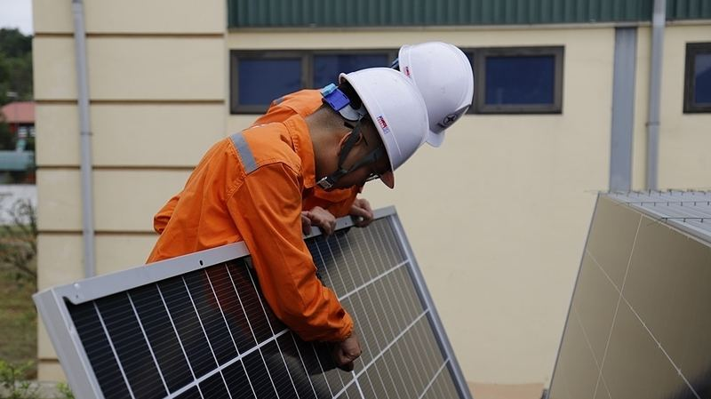
⚡
⚡
🔥
Mặt hàng tỷ đô của Việt Nam gặp ‘cơn bão kép’ tại Mỹ: Xuất khẩu tháng 8 giảm gần 55%, nguy cơ chịu ‘thuế chồng thuế’
Mặt hàng tỷ đô của Việt Nam gặp ‘cơn bão kép’ tại Mỹ: Xuất khẩu tháng 8 giảm gần 55%, nguy cơ chịu ‘thuế chồng thuế’ Phan Trang | 16/09/2026 16:31 PM | Kinh doanh Theo dõi Cafebiz.vn trên Không chỉ đối mặt chi phí thuế g
🔥
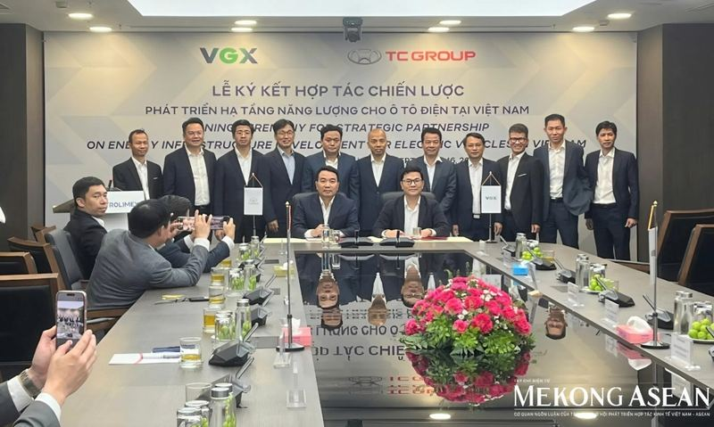
⚡
⚡
Hàng hóa phái sinh: Hoàn thiện hành lang pháp lý cho công cụ phòng ngừa rủi ro giá
Việc xây dựng Luật Giao dịch hàng hóa phái sinh được kỳ vọng tạo khuôn khổ pháp lý thống nhất cho thị trường, giúp doanh nghiệp sử dụng công cụ phái sinh để phòng ngừa biến động giá, ổn định chi phí đầu vào, bảo vệ giá đ
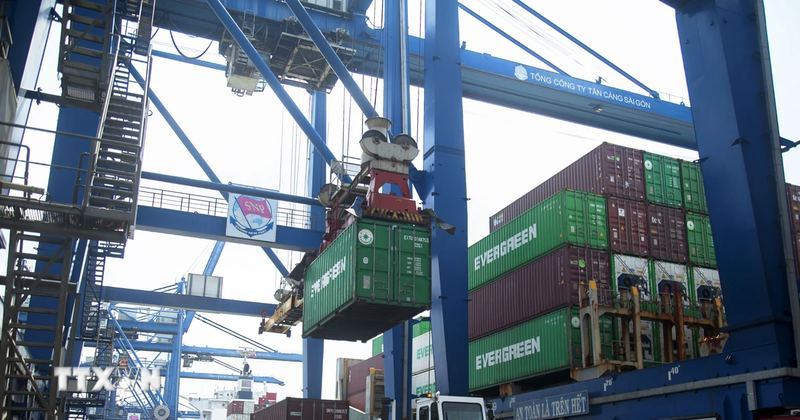
🔥Sáu nền kinh tế lớn nhất ASEAN tăng trưởng 4,8% mỗi năm giai đoạn 2026-2035
Facebook Twitter Lưu bài viết Bản in Copy link Theo báo cáo do Bain & Company, DBS Bank và Vriens & Partners công bố ngày 16/9, sáu nền kinh tế lớn nhất Đông Nam Á gồm Indonesia, Malaysia, Philippines, Singapore, Thái La
🔥
🔥
Chủ tịch Quốc hội Trần Thanh Mẫn tiếp Chủ nhiệm Ủy ban Tài chính và Kinh tế Nhân đại toàn quốc Trung Quốc
Chủ tịch Quốc hội Trần Thanh Mẫn tiếp Chủ nhiệm Ủy ban Tài chính-Kinh tế của Nhân đại toàn quốc Trung Quốc Chung Sơn - Ảnh: TTXVN Chủ tịch Quốc hội Trần Thanh Mẫn nhấn mạnh chuyến thăm của Đoàn tiếp tục làm sâu sắc thêm
🔥
Đại lý ô tô nhập lậu túi khí Honda giả từ Trung Quốc, khai báo là đèn ngủ
Trang Carscoops vừa dẫn thông tin từ Bộ Tư pháp Mỹ cho biết, đối tượng John Bojorquez, 35 tuổi - chủ đại lý ô tô JB Ohio Auto Sale ở Galloway (bang Ohio, Mỹ) đã nhận tội buôn bán hàng giả. Hoạt động này diễn ra từ tháng
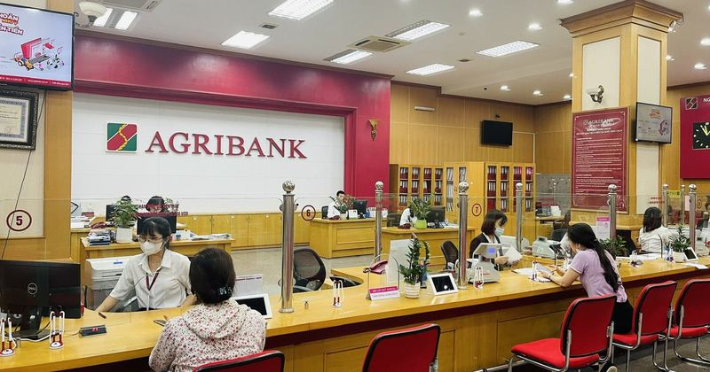
⚡Lãi suất ngân hàng 16/9 tại MB, Techcombank, VPBank, Sacombank, HDBank, Agribank, Vietcombank, BIDV, VietinBank,...
TIN MỚI Theo biểu lãi suất huy động trực tuyến niêm yết tại 35 ngân hàng ngày 15/9, lãi suất tiền gửi có sự chênh lệch đáng kể giữa các nhà băng, đặc biệt ở kỳ hạn 12 tháng. Lãi suất trên 7%/năm tập trung ở một số ngân h
⚡
 ⚡
⚡
⚡
🔥
🔥
 🔥
🔥
Giá USD hôm nay 16.9.2026: Tỷ giá trung tâm lập kỷ lục nhưng ngân hàng đi xuống
Sáng 16.9, Ngân hàng Nhà nước công bố tỷ giá trung tâm giữa VND với USD ở mức 25.626 đồng, tăng 9 đồng so với hôm qua. Đây là mức kỷ lục mới của tỷ giá trung tâm. Tuy nhiên, giá USD tại các ngân hàng thương mại quay đầu
 🔥
🔥
Giá vàng hôm nay 16/9/2026: SJC tăng 1,2 triệu đồng, thế giới vượt 4.330 USD
Giá vàng thế giới hôm nay 16/9/2026 Giá vàng thế giới chiều 16/9 phục hồi lên trên 4.330 USD/ounce, tăng 0,88% trong lúc thị trường chờ quyết định lãi suất của Cục Dự trữ Liên bang Mỹ (Fed). Lúc 16h10 ngày 16/9 (giờ Việt
⚡
Doanh nghiệp sở hữu Watersilk, CleverUp, Giấy Bãi Bằng và đơn vị liên quan bị Thanh tra Chính phủ chỉ ra loạt vi phạm
Doanh nghiệp sở hữu Watersilk, CleverUp, Giấy Bãi Bằng và đơn vị liên quan bị Thanh tra Chính phủ chỉ ra loạt vi phạm Theo Nhật Đức | 16/09/2026 19:42 PM | Kinh doanh Theo dõi Cafebiz.vn trên Thanh tra Chính phủ chỉ ra n
🔥
🔥
CEO Kafi: “Sau giai đoạn xây nền tảng, Kafi bước vào bài toán tăng trưởng bằng hiệu quả”
TIN MỚI Ngày 9/9, 750 triệu cổ phiếu KAI của Công ty Cổ phần Chứng khoán Kafi chính thức giao dịch trên UPCoM với giá tham chiếu 15.000 đồng/cổ phiếu. Những phiên đầu ghi nhận biên độ biến động tương đối lớn trước khi
🔥
🔥
Hai bức ảnh, một cuộc đời: Xót xa số phận người phụ nữ Trung Quốc sau 26 năm mất tích
"Ngày ấy và bây giờ” của bà Tôn Mỹ Hoa sau 26 năm mất tích - Ảnh: SCMP Một phụ nữ Bắc Kinh mất tích năm 2000 vừa được tìm thấy tại Sơn Đông và đoàn tụ với gia đình sau 26 năm. Câu chuyện bắt đầu từ một cuộc gặp tình cờ t
🔥
Lãi suất tăng, lợi suất trái phiếu lập đỉnh: Giới siêu giàu đang đổ tiền về đâu?
USD tăng, lợi suất trái phiếu Mỹ vượt 5% Thị trường tài chính toàn cầu đang đối mặt với áp lực mới khi đồng USD duy trì ở mức cao, lợi suất trái phiếu Mỹ tăng mạnh và giá dầu vượt 100 USD/thùng. Trong phiên 15/9, thị trư
🔥
🔥
🔥
Tài chính doanh nghiệp 24/7: Gilimex khởi công hai khu công nghiệp, PV GAS lãi hơn 14.500 tỷ đồng
Tài chính doanh nghiệp 24/7 ngày 16/9 ghi nhận nhiều chuyển động đáng chú ý về đầu tư, kinh doanh, M&A, tăng vốn và quản trị doanh nghiệp. Gilimex Industrial Park đồng loạt khởi công hai khu công nghiệp tại Bắc Ninh; PV
🔥
🔥
Tổng thống Trump bất ngờ gọi điện cho CEO Nvidia giữa sân khấu để nói một điều
Cuộc gọi diễn ra hôm 14/9 tại All-In Summit, khi Jensen Huang đang trên sân khấu. CEO Nvidia nhận điện thoại và bật loa ngoài để những người tham dự cùng nghe. “Tôi nói với các bạn, tất cả chỉ là một trò lừa”, Tổng thống
⚡
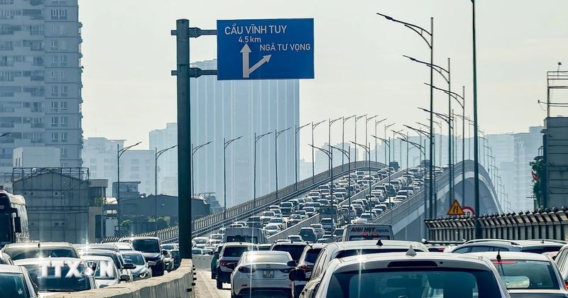
⚡Hà Nội tổ chức giao thông đường Nguyễn Trãi phục vụ thi công đường Vành đai 2,5
Facebook Twitter Lưu bài viết Bản in Copy link Ngày 16/9, Sở Xây dựng Hà Nội cho biết, từ ngày 20/9 đến hết ngày 7/10, nhằm phục vụ thi công đấu nối thoát nước vào các tuyến đường giao cắt với dự án (đường Nguyễn Trãi, đ
 ⚡
⚡
Khai mạc Hội nghị quốc tế IEEE về AI, mạch và hệ thống thông minh tại Hạ Long
Facebook Twitter Lưu bài viết Bản in Copy link Ngày 16/9, tại Hạ Long, Hội nghị Quốc tế IEEE lần thứ 8 về Mạch và Hệ thống Trí tuệ nhân tạo (AICAS 2026) chính thức khai mạc. Hội nghị do Viện Công nghệ Thông tin, Đại học
⚡
⚡
CEO Nvidia bật loa ngoài cho hàng trăm người nghe cuộc gọi của Tổng thống Trump
CEO Nvidia bật loa ngoài cho hàng trăm người nghe cuộc gọi của Tổng thống Trump Theo Trạch Dương | 16/09/2026 19:12 PM | Kinh doanh Theo dõi Cafebiz.vn trên TPO - Jensen Huang - CEO Nvidia - bật loa ngoài khi nhận cuộc g
⚡
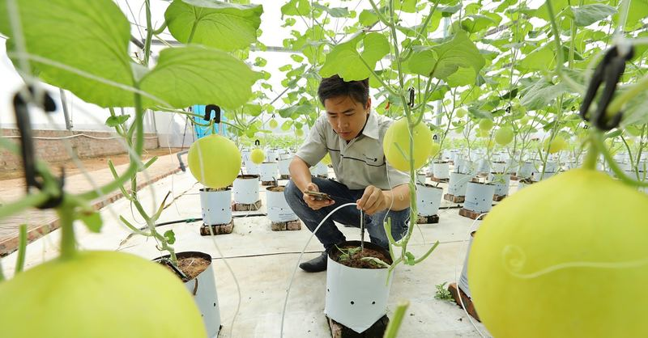
⚡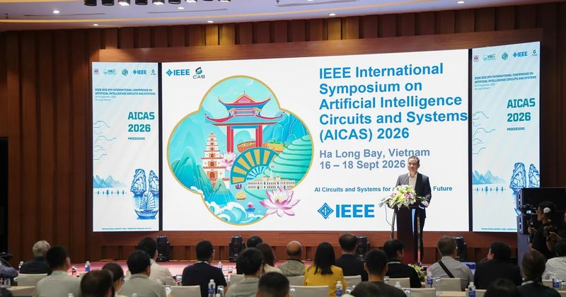
⚡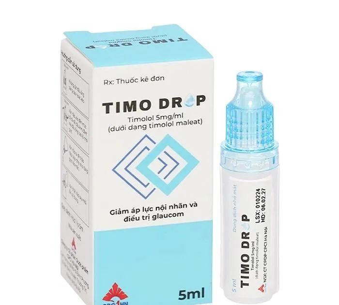
⚡
🔥
🔥
🔥
🔥
Tăng cường hợp tác giữa Quốc hội Việt Nam và Nhân đại toàn quốc Trung Quốc
Chủ tịch Quốc hội Trần Thanh Mẫn tiếp đồng chí Chung Sơn. Ảnh: CỔNG THÔNG TIN ĐIỆN TỬ QUỐC HỘI Tại buổi tiếp, thay mặt lãnh đạo Đảng, Nhà nước, Quốc hội và nhân dân Việt Nam, Chủ tịch Quốc hội Trần Thanh Mẫn bày tỏ chia
 🔥
🔥
🔥
⚡
⚡
Fortune công bố BXH 500 doanh nghiệp châu Âu năm 2026: Doanh thu kỷ lục, biên lợi nhuận giảm và một quốc gia mới đứng đầu
Fortune công bố BXH 500 doanh nghiệp châu Âu năm 2026: Doanh thu kỷ lục, biên lợi nhuận giảm và một quốc gia mới đứng đầu Hà Thu | 16/09/2026 20:43 PM | Kinh doanh Theo dõi Cafebiz.vn trên Tổng doanh thu của các công ty
⚡
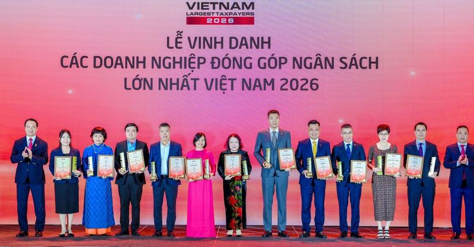
⚡
⚡
⚡
⚡
⚡
VNGGames đồng hành cùng Đội tuyển Quốc gia Thể thao điện tử chinh phục ASIAD 20
Đội tuyển Quốc gia Thể thao Điện tử Việt Nam. Tuyển Việt Nam tham gia thi đấu Huy chương ở 4/11 bộ môn Esports tại ASIAD 20 Đội tuyển Quốc gia Thể thao Điện tử Việt Nam sẽ tranh Huy chương ở 4/11 bộ môn Esports tại ASIAD
⚡
⚡
⚡
⚡
🔥
🔥
Huawei, Tencent, Alibaba và BYD đang chi bao nhiêu tiền vào cuộc chiến công nghệ mới?
Huawei, Tencent, Alibaba và BYD đang chi bao nhiêu tiền vào cuộc chiến công nghệ mới? Mai Mai | 16/09/2026 10:01 AM | Công nghệ Theo dõi Cafebiz.vn trên Cuộc đua công nghệ Trung Quốc bước sang trang mới: Ai đang chi tiền
🔥
🔥
⚡
Dự án đường sắt tốc độ cao Bắc - Nam được bổ sung loạt cơ chế triển khai
Nghị định số 352/2026/NĐ-CP vừa bổ sung, hoàn thiện nhiều quy định trực tiếp liên quan đến dự án đường sắt tốc độ cao Bắc - Nam, từ hình thức đầu tư, phân chia dự án thành phần đến giải phóng mặt bằng và xác định tổng mứ
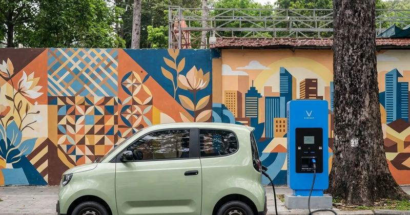
⚡
⚡
Bắc Ninh: Khởi công Khu công nghiệp Thuận Thành III, phân khu C có vốn đầu tư gần 2.000 tỷ đồng
Facebook Twitter Lưu bài viết Bản in Copy link Ngày 16/9, Công ty Trách nhiệm hữu hạn Khu công nghiệp Gilimex Bắc Ninh tổ chức khởi công dự án Khu công nghiệp Thuận Thành III, phân khu C với quy mô 196 ha, tổng vốn đầu t
⚡
Phim kinh dị 'Vùng đất quỷ dữ' lọt cửa kiểm duyệt nguyên vẹn tại Việt Nam
Vùng đất quỷ dữ (Resident Evil) - bộ phim kinh dị nặng đô của điện ảnh Mỹ có các suất chiếu sớm từ tối 16/9 trước khi chính thức ra rạp từ 18/9. Tác phẩm này lọt cửa kiểm duyệt trót lọt mà không bị cắt 1 giây trước khi đ
⚡
⚡
⚡
Hà Nội tổ chức lại giao thông trên đường Nguyễn Trãi phục vụ thi công đường Vành đai 2,5
Theo phương án được Sở Xây dựng Hà Nội chấp thuận, việc tổ chức thi công trên đường Nguyễn Trãi được thực hiện cuốn chiếu theo từng phân đoạn, nhằm bảo đảm giao thông trên tuyến. Chiều dài rào chắn mỗi phân đoạn cố định
🔥
Kêu gọi đề xuất nhiệm vụ đổi mới công nghệ ứng dụng AI, tài trợ tối đa 3 tỷ đồng
Kêu gọi đề xuất nhiệm vụ đổi mới công nghệ ứng dụng AI năm 2026, tài trợ tối đa 3 tỷ đồng/nhiệm vụ, thời gian thực hiện không quá 12 tháng - Ảnh: chinhphu.vn/Thu Giang NATIF tiếp nhận đề xuất từ doanh nghiệp, tổ chức có
🔥
🔥
Kêu gọi đề xuất nhiệm vụ đổi mới công nghệ ứng dụng AI, tài trợ tối đa 3 tỷ đồng
Facebook Twitter Lưu bài viết Bản in Copy link Quỹ Đổi mới công nghệ quốc gia (NATIF) thông báo tiếp nhận hồ sơ đề nghị tài trợ nhiệm vụ đổi mới công nghệ ứng dụng trí tuệ nhân tạo (AI) năm 2026. Mức tài trợ từ ngân sách
🔥
Nghịch lý nghề xây dựng: Học xong có việc làm ngay vẫn chật vật tuyển sinh
TIN MỚI Tốt nghiệp được tuyển dụng ngay Trong bối cảnh hàng loạt dự án đầu tư công, công trình hạ tầng, xây dựng dân dụng và chỉnh trang đô thị đồng loạt triển khai, nhu cầu nhân lực ngành xây dựng tại TPHCM đang tăng mạ
🔥
Chứng khoán ngày 16/9: Cổ phiếu tài chính và bất động sản gây sức ép, VN-Index giảm điểm
Thanh khoản toàn thị trường giảm so với phiên trước đó, tổng khối lượng giao dịch 3 sàn đạt hơn 673 triệu cổ phiếu , tương ứng tổng giá trị giao dịch đạt hơn 16.300 tỷ đồng. Nhà đầu tư nước ngoài tiếp tục mua ròng trên c
🔥
Tỉnh sắp lên thành phố trực thuộc Trung ương đồng loạt khởi công 2 KCN rộng gần 345ha, vốn đầu tư hơn 4.100 tỷ đồng, do Gilimex Industrial Park đầu tư
TIN MỚI Ngày 16/9/2026, Công ty CP Khu công nghiệp Gilimex (Gilimex Industrial Park) đồng thời tổ chức lễ khởi công Khu công nghiệp Nghĩa Hưng và Khu công nghiệp Thuận Thành III – Phân khu C tại tỉnh Bắc Ninh. Cả hai dự
 🔥
🔥
Jensen Huang bác bỏ thuyết tận thế và tuyên bố siêu trí tuệ AI đã hiện diện
Jensen Huang bác bỏ thuyết tận thế và tuyên bố siêu trí tuệ AI đã hiện diện Theo Đức Khương | 16/09/2026 16:20 PM | Công nghệ Theo dõi Cafebiz.vn trên Giữa làn sóng kêu gọi ghìm phanh công nghệ vì nỗi sợ diệt vong, người
🔥
🔥
Phó Thủ tướng Thường trực Phạm Gia Túc: Thúc đẩy liên kết kinh tế sâu rộng giữa các địa phương của Việt Nam và tỉnh Quảng Tây (Trung Quốc)
Phó Thủ tướng Thường trực Chính phủ tiếp đồng chí Trần Cương, Ủy viên Trung ương Đảng, Bí thư Đảng ủy Khu tự trị dân tộc Choang Quảng Tây, Trung Quốc - Ảnh: chinhphu.vn/Phương Nguyên Đánh giá cao và chúc mừng Quảng Tây t
🔥
 🔥
🔥
Lãi suất ngân hàng hôm nay 16/9/2026: Cộng tới 1,9%/năm cho khách hàng mới
Ngân hàng Bản Việt (BVBank) đang áp dụng chương trình cộng thêm tới 1,9 điểm phần trăm lãi suất tiền gửi cho khách hàng cá nhân mới gửi tiền qua ứng dụng ngân hàng số. Bên cạnh lãi suất huy động niêm yết, khách hàng đủ đ
🔥
Cảnh giác chiêu trò đưa đi Nhật, Trung Quốc để 'làm đẹp hộ chiếu' rồi ôm tiền biến mất
Ngày 16-9, thông tin từ Công an TP Cần Thơ cho biết Phòng Cảnh sát kinh tế vừa tiếp nhận tố giác của nhiều người dân liên quan đến bà N.T.N.L. (47 tuổi, ngụ TP Đồng Nai) về hành vi có dấu hiệu lừa đảo chiếm đoạt tài sản.
🔥
🔥
🔥
🔥
🔥
🔥
⚡
Thủ tướng: Không để lợi ích cục bộ, lợi ích ngành, lợi ích nhóm chi phối chính sách
Thủ tướng Lê Minh Hưng chủ trì Phiên họp chuyên đề xây dựng pháp luật tháng 9/2026 - Ảnh: chinhphu.vn Tại phiên họp, Chính phủ đã cho ý kiến về các dự án luật, nghị quyết: Luật Đất đai (sửa đổi); Luật Nhà ở (sửa đổi); Lu
⚡
Công an TPHCM tìm 3 người đi trên một xe máy liên quan đến vụ TNGT chết người
XEM CLIP: Mới đây, Cơ quan CSĐT Công an TPHCM phát đi thông báo tìm 3 người và phương tiện liên quan đến vụ tai nạn giao thông xảy ra sáng 26/8 tại đường Nguyễn Thị Định, phường Cát Lái, khiến 1 người tử vong. Theo thông
⚡
Thủ tướng Lê Minh Hưng: Tuyệt đối không để 'lợi ích nhóm' chi phối chính sách
Chiều 16/9, Thủ tướng Lê Minh Hưng chủ trì Phiên họp chuyên đề xây dựng pháp luật tháng 9/2026, xem xét, cho ý kiến đối với 8 dự án luật, nghị quyết chuẩn bị trình Kỳ họp thứ 2, Quốc hội khóa XVI. Giải quyết đến cùng các
⚡
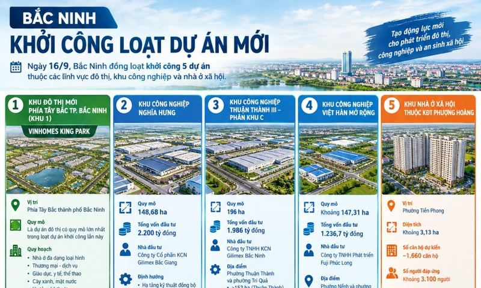
⚡
⚡
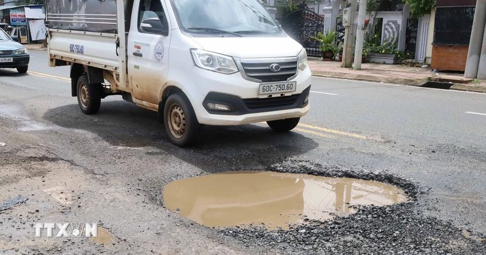
⚡Đường huyết mạch nối Tây Nguyên xuống cấp nghiêm trọng, nguy cơ tai nạn rình rập
Facebook Twitter Lưu bài viết Bản in Copy link Tuyến đường Nguyễn Huệ, phường Bình Phước, thành phố Đồng Nai là tuyến giao thông quan trọng kết nối ĐT.741 với Quốc lộ 14, có lưu lượng phương tiện lớn, đặc biệt là xe tải
⚡
⚡
⚡
Chủ tịch thành phố Cần Thơ nói về đề xuất dời trung tâm hành chính, đầu tư sân bay mới
Ông Trương Cảnh Tuyên - Chủ tịch UBND TP Cần Thơ cho biết, lãnh đạo thành phố hết sức phấn khởi khi Dự thảo Quy hoạch chung thành phố đến năm 2050, tầm nhìn đến năm 2075 nhận được nhiều sự quan tâm, đóng góp ý kiến của n
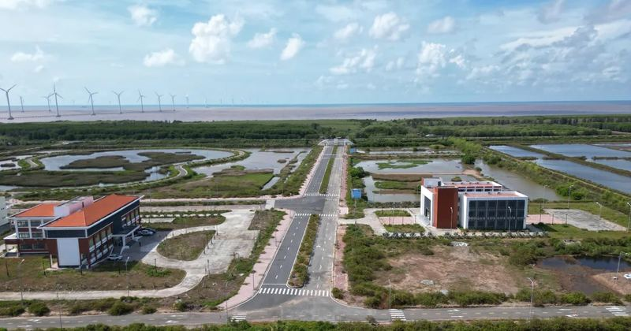
🔥Khu nông nghiệp công nghệ cao phát triển tôm Bạc Liêu thu hút nhà đầu tư
Khu nông nghiệp ứng dụng công nghệ cao phát triển tôm Bạc Liêu Theo đó, dự án nuôi tôm thẻ chân trắng siêu thâm canh 3 giai đoạn bằng công nghệ sạch kết hợp trình diễn ngành công nghiệp phụ trợ do liên danh nhà đầu tư gồ
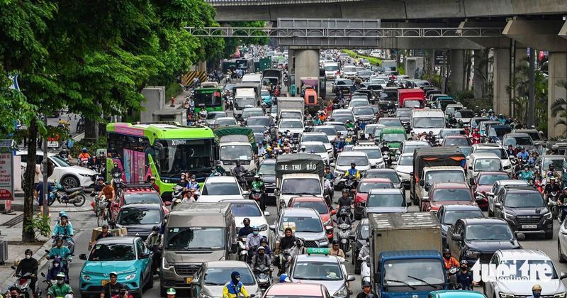
🔥
🔥
🔥
🔥
Điện Biên: Diện tích trồng mới cây cà-phê trong năm đã hoàn thành chỉ tiêu cả nhiệm kỳ
Thông tin kết quả trồng mới cây cà-phê trong năm, đồng chí Lê Xuân Cảnh, Giám đốc Sở Nông nghiệp và Môi trường Điện Biên, cho biết chi tiết, theo kế hoạch chỉ tiêu giao, năm 2026 Điện Biên phải hoàn thành trồng mới 5.000
🔥
Phiên 16/9: Khối ngoại tiếp đà mua ròng, một cổ phiếu ngân hàng được gom hơn 200 tỷ
TIN MỚI Tâm lý thận trọng trước cuộc họp công bố lãi suất của Fed khiến VN-Index giằng co trong biên hẹp trong phiên 16/9. VN-Index chốt phiên giảm nhẹ 1 điểm, tại 1.810 điểm. Thanh khoản neo mức thấp với tổng giá trị gi
🔥
🔥
🔥
Quán Việt tại Mỹ khiến thực khách 'ăn xong phải gói đồ thừa đem về vì quá ngon'
Nhà hàng Việt 2 lần được Michelin khen ngợi Nhà hàng chuyên món Việt Nam, tên "Ngon" đã có tiếng nhiều năm nay ở Dallas, Mỹ và 2 năm liên tiếp nhận giải thưởng Michelin Bib Gourmand (quán ăn ngon, giá phải chăng) vào năm
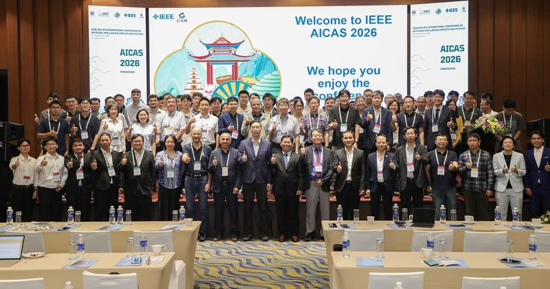
🔥
🔥
🔥
🔥
🔥
🔥
Lenovo ra mắt dải desktop IdeaCentre tối ưu AI cho văn phòng và gia đình hiện đại
Lenovo ra mắt dải desktop IdeaCentre tối ưu AI cho văn phòng và gia đình hiện đại Ánh Dương | 16/09/2026 15:30 PM | Công nghệ Theo dõi Cafebiz.vn trên Lenovo hôm nay giới thiệu các thành viên mới nhất của dòng máy tính đ
🔥
CIO Summit 2026 khám phá cơ hội và thách thức trong việc áp dụng AI cho doanh nghiệp
CIO Summit 2026 và câu chuyện thời kỳ thử AI miễn phí sắp kết thúc Quỳnh Nga | 16/09/2026 15:23 PM | Công nghệ Theo dõi Cafebiz.vn trên Dữ liệu từ cộng đồng CIO Vietnam cho thấy những con số bất ngờ về tình hình doanh ng
🔥
🔥
"Tôi buộc phải chôn vùi tài năng của mình ở hôm qua": Tâm thư gây rúng động giới công nghệ của kỹ sư DeepSeek, thừa nhận chính AI do mình tạo ra đang "nuốt chửng" chính công việc của mình
"Tôi buộc phải chôn vùi tài năng của mình ở hôm qua": Tâm thư gây rúng động giới công nghệ của kỹ sư DeepSeek, thừa nhận chính AI do mình tạo ra đang "nuốt chửng" chính công việc của mình Thiên Minh | 16/09/2026 12:33 PM
🔥
TCBS chỉ ra 3 yếu tố cần theo dõi về chất lượng tài sản ngân hàng cuối năm
Ảnh minh họa Tại báo cáo “Chất lượng tài sản ngành ngân hàng” công bố ngày 15/9, CTCP Chứng khoán Kỹ thương (TCBS Research) ghi nhận, tỷ lệ nợ xấu của 27 ngân hàng niêm yết tại cuối quý 2/2026 ở mức 2,01%, giảm nhẹ 0,03
🔥
TPBank lọt Top 8 ngân hàng tư nhân nộp ngân sách lớn nhất, ghi dấu mốc đóng góp cao nhất từ trước đến nay
TIN MỚI Đại diện TPBank - ông Nguyễn Việt Anh, Phó Tổng giám đốc tại Lễ Vinh danh các Doanh nghiệp nộp Ngân sách lớn nhất 2026. Ngày 15/9, tại Lễ Vinh danh các Doanh nghiệp nộp Ngân sách lớn nhất 2026 do kênh thông tin t
🔥
🔥
⚡
Phó Thủ tướng Thường trực Chính phủ Phạm Gia Túc hội đàm với Phó Thủ tướng Thường trực Quốc vụ viện Trung Quốc Đinh Tiết Tường
Ủy viên Bộ Chính trị, Phó Thủ tướng Thường trực Phạm Gia Túc và đồng chí Đinh Tiết Tường, Ủy viên Thường vụ Bộ Chính trị, Phó Thủ tướng Thường trực Quốc vụ viện Trung Quốc - Ảnh: chinhphu.vn/Phương Nguyên Tại cuộc hội đà
⚡
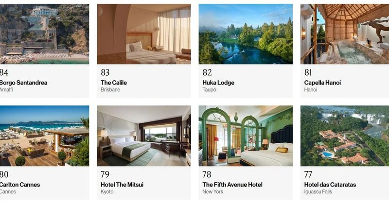
⚡Việt Nam có khách sạn lọt vào danh sách 100 khách sạn tốt nhất thế giới năm 2026
Facebook Twitter Lưu bài viết Bản in Copy link Ngày 15/9, The World's 50 Best Hotels tiếp tục công bố danh sách 1-50 tại Paris, hoàn tất bảng xếp hạng 100 khách sạn tốt nhất thế giới năm 2026. Trong danh sách mở rộng từ
⚡
Đánh giá khả năng chịu lực cầu đường sắt Mỹ Chánh sau vụ 3 sà lan mắc kẹt
Facebook Twitter Lưu bài viết Bản in Copy link Bộ Xây dựng vừa có văn bản đề nghị Ủy ban Nhân dân tỉnh Quảng Trị và các cơ quan, đơn vị xử lý sự cố sà lan bị mắc kẹt tại cầu đường sắt Mỹ Chánh. Theo đó, vào lúc 14h ngày
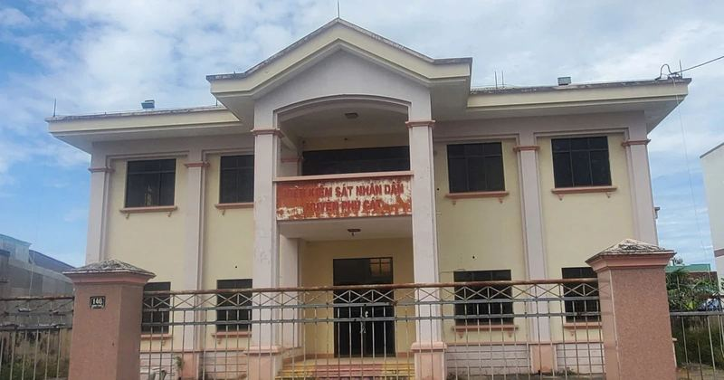
⚡
⚡
Thủ tướng chỉ đạo xử lý ngay tình trạng thiếu sách giáo khoa, bất cập suất ăn học đường
Xử lý dứt điểm trong thời gian ngắn nhất Tại cuộc họp chiều 16/9, Thủ tướng Lê Minh Hưng chỉ đạo một số nhiệm vụ trọng tâm, cấp bách cần triển khai ngay về kinh tế - xã hội, trước hết là quyết tâm, quyết liệt thực hiện m
⚡
Lính Mỹ tiết lộ hình ảnh các căn cứ bị tàn phá vì trúng hoả lực của Iran
Theo đài RT, kênh CBS News ngày 15/9 đưa tin các quân nhân cung cấp hình ảnh đã chọn giấu tên do những quy định hạn chế truyền thông nghiêm ngặt trong quân đội Mỹ. Hình ảnh các căn cứ của Washington ở Trung Đông bị tàn p
⚡
Giao dịch tài sản mã hóa sẽ phải công khai về lệnh, giá, khối lượng mỗi phiên
Các tổ chức cung cấp dịch vụ tài sản mã hóa sẽ phải công khai nhiều dữ liệu, gồm giá, khối lượng giao dịch và 3 mức chào mua, chào bán tốt nhất trong phiên. Bộ Tài chính, UBCKNN đang lấy ý kiến quy định công khai thông t
⚡
Sinh viên Trường cao đẳng Y tế Thái Bình tham dự Kỳ thi Kỹ năng nghề thế giới lần thứ 48 tại Thượng Hải, Trung Quốc
Tham dự có đồng chí Phạm Văn Nghiêm, Phó Chủ tịch Ủy ban nhân dân tỉnh Hưng Yên; đại diện lãnh đạo các sở, ban, ngành và ban giám hiệu các trường đại học, cao đẳng trên địa bàn. Vinh dự cho tỉnh Hưng Yên khi có sinh viên
⚡
⚡
[Video] Dự báo thời tiết đêm nay và ngày mai 17/9/2026: Bắc Bộ và Bắc Trung Bộ tiếp tục mưa lớn, cảnh báo nguy cơ lũ cao
Trong đêm nay và ngày mai, khu vực Bắc Bộ tiếp tục chịu ảnh hưởng của khối không khí lạnh suy yếu kết hợp với vùng hội tụ gió trên cao, gây mưa ở nhiều nơi. Các tỉnh, thành phố như Lào Cai, Tuyên Quang, Phú Thọ, Thái Ngu
⚡
⚡
Thủ tướng Lê Minh Hưng: Thể chế phải đi trước một bước, mở đường cho phát triển
Facebook Twitter Lưu bài viết Bản in Copy link Chiều 16/9, Thủ tướng Lê Minh Hưng chủ trì Phiên họp chuyên đề xây dựng pháp luật tháng 9/2026, xem xét, cho ý kiến đối với 8 dự án luật, nghị quyết chuẩn bị trình Kỳ họp th
⚡
⚡
⚡
Công bố nhà tài trợ và tên gọi chính thức của hai giải bóng đá V.League 2 và Cúp Quốc gia
Theo thỏa thuận, Sacombank trở thành nhà tài trợ chính của Giải Hạng nhất quốc gia và Cúp Quốc gia mùa giải 2026/2027; trong khi FPT Play tiếp tục đảm nhiệm vai trò đối tác truyền hình năm thứ 5 liên tiếp. Đây là lần đầu
⚡
Khai trừ ra khỏi Đảng đối với các đồng chí Trần Văn Thuấn, Nguyễn Huy Ngọc
Thứ trưởng Bộ Y tế Trần Văn Thuấn Theo thông cáo báo chí của Văn phòng Trung ương Đảng về xem xét, thi hành kỷ luật đảng viên vi phạm, ngày 16-9, tại trụ sở Trung ương Đảng, sau khi xem xét đề nghị của Ủy ban Kiểm tra Tr
⚡
VPS năm thứ ba liên tiếp dẫn đầu ngành chứng khoán về nộp ngân sách Nhà nước
TIN MỚI Đây là năm thứ ba liên tiếp VPS giữ vị trí quán quân nộp ngân sách trong khối công ty chứng khoán. Năm tài chính 2025, Công ty đóng góp 2.848 tỷ đồng vào ngân sách Nhà nước, chiếm gần 20% tổng mức nộp của Top 15
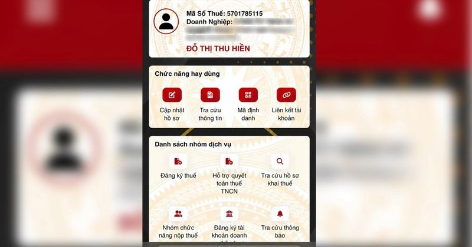
⚡ ⚡
⚡
⚡
⚡
⚡
Danh tính 5 người tử vong vụ cháy nhà ở Hà Nội: Hai đôi vợ chồng và bé 6 tuổi
Sáng 16/9, lãnh đạo Đảng ủy, UBND phường và Ủy ban MTTQ Việt Nam phường Tây Hồ (Hà Nội) đã có mặt tại Bệnh viện Quân y 354 để thăm hỏi, động viên các nạn nhân bị thương và gia đình các nạn nhân tử vong sau vụ cháy tại ng
⚡
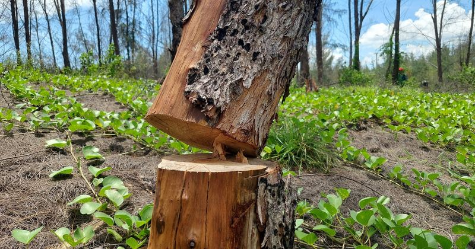
⚡
⚡
⚡
Sau sự cố trôi 3 sà lan, cảnh sát cảnh báo không neo tàu thuyền vào bụi tre, cọc tạm
Cảnh sát giao thông Quảng Trị khuyến cáo chủ phương tiện không neo sà lan, tàu thủy tạm bợ khi mưa lũ - Ảnh: HOÀNG TÁO Chiều 16-9, Thượng tá Nguyễn Văn Quảng - Phó trưởng Phòng Cảnh sát giao thông , Công an tỉnh Quảng Tr
⚡
Báo cáo điều trị bạch biến tối ưu tại hội nghị quốc tế AMSC Malaysia 2026
(Dân trí) - Tại phiên “Quản lý rối loạn sắc tố trên làn da châu Á” của AMSC Malaysia 2026, BS.CKII Nguyễn Phương Thảo, Giám đốc chuyên môn Hệ thống Pensilia, chia sẻ cách tối ưu liệu pháp Excimer 308nm bằng chiến lược đi
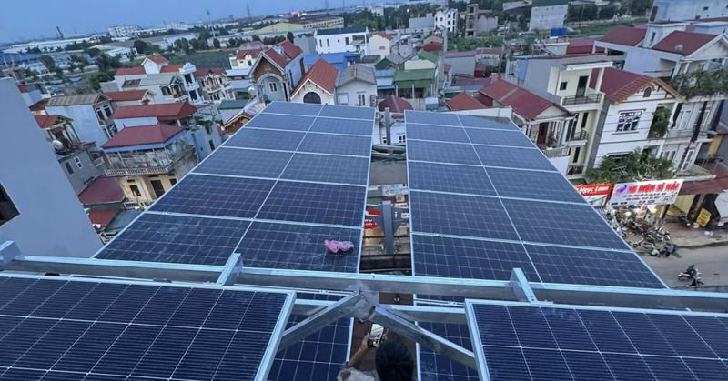
🔥Bộ Công Thương có chỉ đạo mới về hỗ trợ hộ gia đình lắp điện mặt trời mái nhà
Bộ Công Thương vừa có văn bản gửi các bộ, cơ quan ngang bộ, địa phương và Tập đoàn Điện lực Việt Nam (EVN) về việc lắp điện mặt trời mái nhà tự sản xuất, tự tiêu thụ tại các tòa nhà cơ quan, công sở, trường học, bệnh việ
🔥
🔥
Phát triển kinh tế tư nhân ở Trung Bộ và Tây Nguyên: Thực trạng và hàm ý chính sách
Kinh tế tư nhân ngày càng được xác định là một trong những động lực quan trọng của tăng trưởng, huy động nguồn lực xã hội, tạo việc làm và nâng cao năng lực cạnh tranh. Cùng với sự thay đổi trong nhận thức, các chủ trươn
🔥
79 nền tảng số dùng chung: Giảm đầu tư trùng lặp, tăng liên thông dữ liệu
Thứ trưởng Bộ Khoa học và Công nghệ Bùi Hoàng Phương nêu những điểm mới của Khung kiến trúc tổng thể quốc gia số - Ảnh: chinhphu.vn/Gia Huy Tại Hội nghị phổ biến, quán triệt và triển khai Quyết định số 1425/QĐ-TTg ngày 2
🔥
Xuất khẩu 49,3 tỷ USD sau 8 tháng: Nông nghiệp giữ nhịp cho mục tiêu 74 tỷ USD
Toàn cảnh buổi họp báo. Ảnh: Thu Trang/Mekong ASEAN Xuất khẩu nông, lâm, thủy sản 8 tháng đầu năm 2026 tăng 7% so với cùng kỳ, đưa toàn ngành xuất siêu 14,25 tỷ USD và tiến gần hơn mục tiêu 74 tỷ USD cả năm, thông tin tạ
🔥
Sau 2 tháng nhận chức, CEO HanaGold thừa nhận thanh khoản vẫn là khó khăn lớn nhất, tiết lộ 6 giai đoạn hoạt động trở lại và trả tiền khách hàng
TIN MỚI Ông Lâm Trường Duy Linh (Ken Lâm), CEO mới của HanaGold. Từ ngày 1/7/2026, ông Lâm Trường Duy Linh (Ken Lâm) chính thức giữ chức Tổng Giám đốc và Người đại diện theo pháp luật của Công ty Cổ phần Vàng bạc Đá quý
🔥
🔥
Em trai ông Nguyễn Duy Hưng chi hơn trăm tỷ mua cổ phiếu SSI ngay trước “giờ G” nâng hạng
SSI: Giá hiện tại Thay đổi Xem hồ sơ doanh nghiệp TIN MỚI Ông Nguyễn Hồng Nam, thành viên HĐQT Chứng khoán SSI (mã SSI), vừa thông báo hoàn tất mua 5 triệu cổ phiếu SSI qua đó nâng sở hữu lên 17,43 triệu cổ phiếu (tỷ lệ
🔥
🔥
🔥
Đẩy nhanh tiến độ các dự án trọng điểm giao thông và năng lượng khu vực Đồng bằng sông Cửu Long
Phó Thủ tướng Thường trực Phạm Gia Túc chủ trì cuộc làm việc về tình hình triển khai các dự án giao thông trọng điểm tại Đồng bằng sông Cửu Long - Ảnh: chinhphu.vn/Phương Nguyên. Văn bản nêu: Để đẩy nhanh tiến độ, hoàn t
🔥
🔥
🔥
⚡
⚡
Kho bạc Nhà nước cùng rà soát số liệu, bảo đảm chấm điểm giải ngân sát thực tế
Phương án chấm điểm thực hiện giải ngân kế hoạch vốn đầu tư công đang được Bộ Tài chính triển khai thử nghiệm trước khi áp dụng chính thức từ kỳ báo cáo tháng 10/2026. Trong quá trình này, Kho bạc Nhà nước các cấp phối h
⚡
⚡
Thủ tướng: Tuyệt đối không để lợi ích cục bộ, lợi ích ngành, lợi ích nhóm chi phối chính sách
Thủ tướng Lê Minh Hưng chủ trì Phiên họp chuyên đề xây dựng pháp luật tháng 9/2026 - Ảnh: chinhphu.vn/Nhật Bắc Tham dự Phiên họp có các đồng chí Ủy viên Bộ Chính trị, Bí thư Trung ương Đảng, Ủy viên Trung ương Đảng, Phó
⚡
⚡
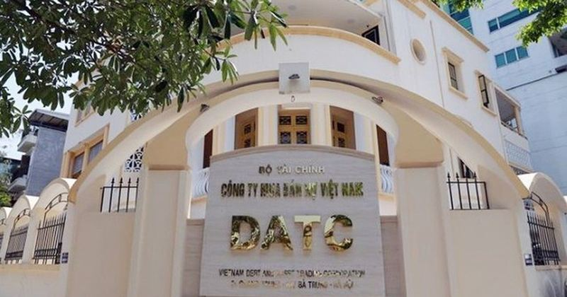
⚡Cơ chế hoạt động và quản lý tài chính của Công ty TNHH MTV Mua bán nợ Việt Nam
Cơ chế hoạt động và quản lý tài chính của Công ty TNHH MTV Mua bán nợ Việt Nam Chức năng, nhiệm vụ của DATC DATC là công cụ của Chính phủ hỗ trợ cơ cấu lại doanh nghiệp nhà nước và các thành phần kinh tế khác thông qua h
🔥
Quỹ tiết kiệm năng lượng từ góc nhìn tài chính công: Một đồng vốn công phải tạo được nhiều đồng vốn xã hội
Việc hình thành Quỹ thúc đẩy sử dụng năng lượng tiết kiệm và hiệu quả là cần thiết, với hiệu quả của Quỹ cần được đo lường bằng khả năng sử dụng vốn công để huy động thêm tín dụng ngân hàng, vốn doanh nghiệp, nguồn lực t
🔥
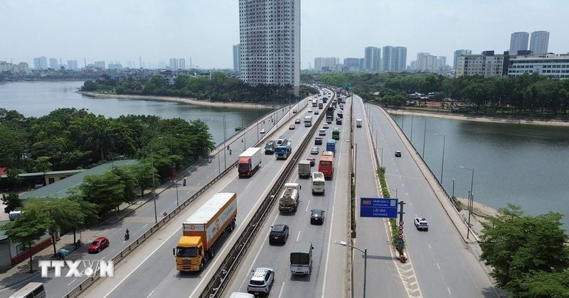
🔥
🔥
🔥
Thúc đẩy nội địa hóa thiết kế, chế tạo đến tích hợp hệ thống hạ tầng công nghiệp
Facebook Twitter Lưu bài viết Bản in Copy link “Công nghiệp Việt Nam đang bước vào một giai đoạn phát triển mới với sự mở rộng mạnh mẽ của các lĩnh vực điện tử-bán dẫn, dược phẩm, trung tâm dữ liệu, bệnh viện và sản xuất
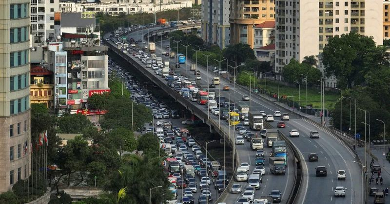
🔥
🔥
Nhật Bản tạo phát minh "nhẹ hơn 1000 lần" đến khó tin, có thể giúp ngành hàng không tiết kiệm hàng tỷ USD
Nhật Bản tạo phát minh "nhẹ hơn 1000 lần" đến khó tin, có thể giúp ngành hàng không tiết kiệm hàng tỷ USD Theo Trang Ly | 16/09/2026 16:50 PM | Công nghệ Theo dõi Cafebiz.vn trên Phát minh đó là gì? Nhật Bản tạo ra lớp s
🔥
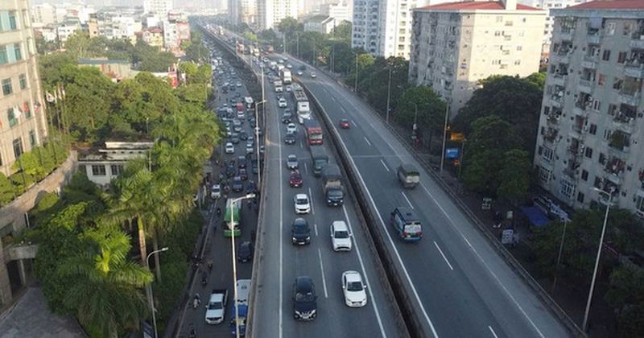
🔥
🔥
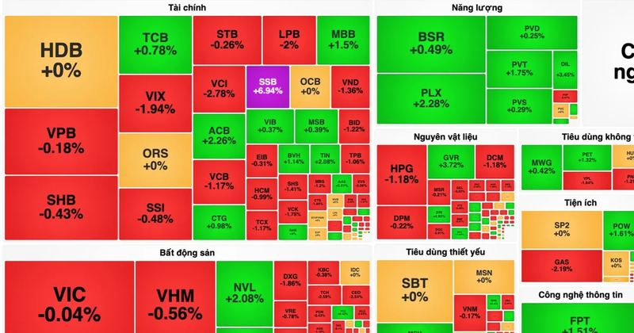
🔥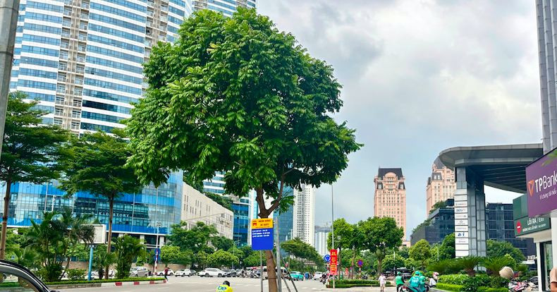
🔥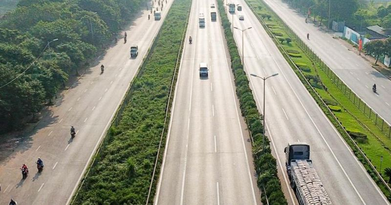
🔥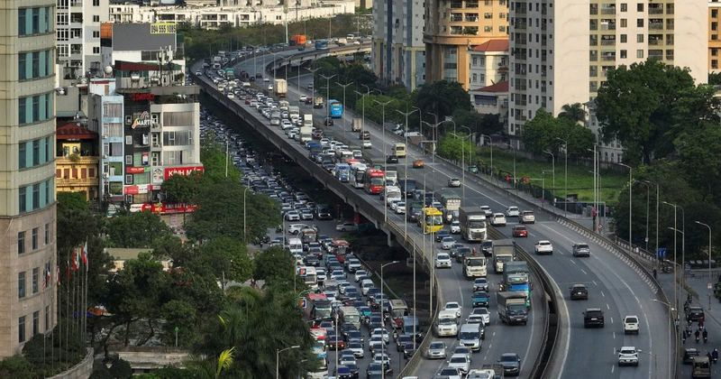
🔥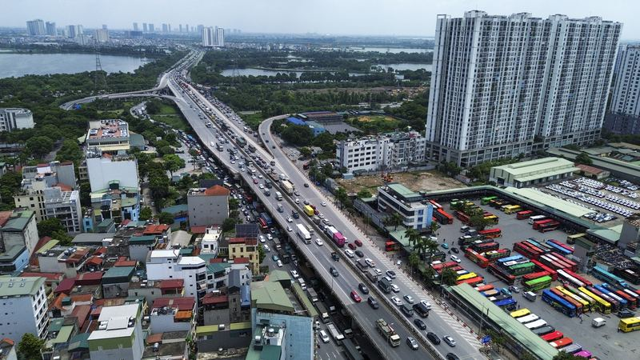
🔥
🔥
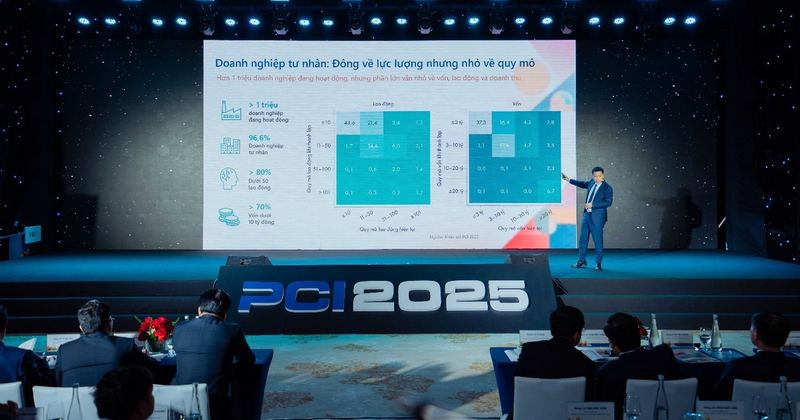
🔥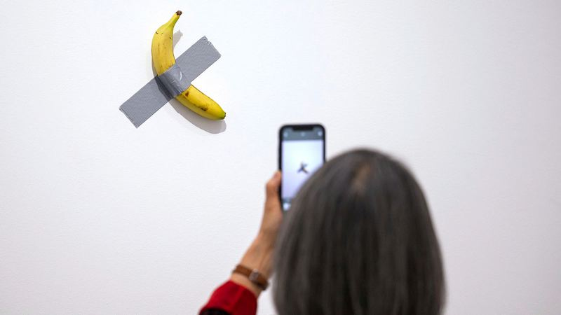
🔥
🔥
🔥
Đầu xe cứu thương biến dạng kỳ quái, 4 người bị thương sau tai nạn trên cao tốc Trung Lương
Theo báo cáo nhanh từ đơn vị quản lý tuyến cao tốc Trung Lương – Mỹ Thuận, vụ va chạm xảy ra vào lúc 5h19 hôm nay (16/9), trên cao tốc đoạn qua xã Mỹ Lợi, tỉnh Đồng Tháp. Thời điểm trên, xe cứu thương biển kiểm soát 51B-
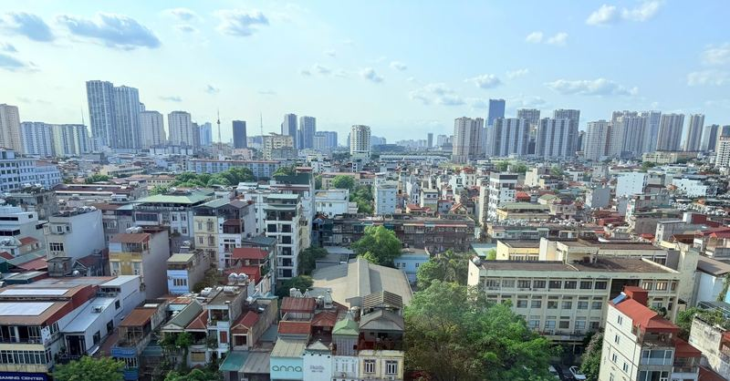
🔥
🔥
🔥
Tòa Hàn Quốc yêu cầu Triều Tiên bồi thường 32,5 triệu USD vì giật sập văn phòng liên lạc
Tòa Hàn Quốc yêu cầu Triều Tiên bồi thường 32,5 triệu USD vì giật sập văn phòng liên lạc Tòa án ở Seoul yêu cầu Triều Tiên bồi thường khoảng 32,5 triệu USD cho Hàn Quốc vì giật sập văn phòng liên lạc giữa hai nước hồi nă
🔥
Đổi mới chính sách hỗ trợ đầu tư, tăng liên kết FDI với doanh nghiệp Việt
Dự thảo Luật sửa đổi, bổ sung một số điều của Luật Đầu tư đề xuất đổi mới mạnh chính sách ưu đãi, hỗ trợ đầu tư, chuyển từ ưu đãi truyền thống sang hỗ trợ gắn với kết quả thực hiện cam kết. Cùng với bổ sung các hình thức
🔥
🔥
🔥
Drone Geranium phản lực sẵn sàng ‘lật ngược’ cục diện chiến trường Trung Đông
Ảnh: RIA Novosti/Kirill Zykov/Iz.ru Trong một diễn biến gây chấn động giới phân tích quân sự quốc tế, tờ Financial Times dẫn nguồn từ quan chức an ninh phương Tây và nhân vật ‘thân’ Điện Kremlin cho biết Iran đã chính th
🔥
Việt Nam bàn giao tấm biển tên và chòi canh gác của doanh trại Reasoner cho Mỹ
Phó Chủ tịch UBND TP Đà Nẵng Hồ Quang Bửu khẳng định việc bàn giao các hiện vật thể hiện truyền thống nhân văn, nhân đạo của dân tộc Việt Nam. Đồng thời, việc này thể hiện chủ trương gác lại quá khứ, cùng hợp tác khắc ph
 🔥
🔥
🔥
[Video] EVN hết lỗ lũy kế, ghi nhận lãi hơn 12.200 tỷ đồng trong 8 tháng
Kết quả kinh doanh 8 tháng đầu năm ghi nhận nhiều khởi sắc với doanh thu toàn tập đoàn đạt trên 482.000 tỷ đồng, bằng 70% kế hoạch năm. Lợi nhuận ước đạt 12.215 tỷ đồng, vượt 3% mục tiêu năm, đóng góp vào ngân sách nhà n
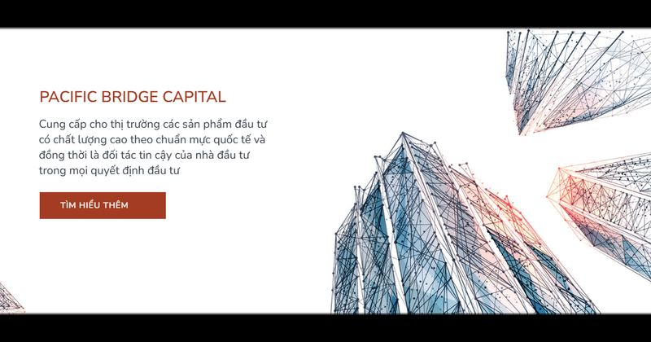
⚡
⚡
⚡
Thông tư về quản lý nguồn thu từ chuyển đổi sở hữu doanh nghiệp tiếp tục có hiệu lực
Bộ Tài chính vừa ban hành Quyết định số 2553/QĐ-BTC ngày 15/9/2026, công bố Thông tư số 57/2022/TT-BTC ngày 16/9/2022 của Bộ trưởng Bộ Tài chính hướng dẫn một số điều của Nghị định số 148/2021/NĐ-CP về quản lý, sử dụng n
⚡
Ông chủ Công ty Triệu Nụ Cười và kịch bản lừa hàng chục tỷ đồng của nhiều nhà đầu tư
Liên quan đến vụ án, CQĐT đề nghị truy tố 12 bị can khác cũng về tội Lừa đảo chiếm đoạt tài sản và Tàng trữ tiền giả, trong đó có 5 người là cựu Phó TGĐ Công ty CP Triệu Nụ Cười . Theo kết luận điều tra, năm 2023, Hồ Quố
 🔥
🔥
🔥
🔥
Phó Thủ tướng Thường trực khảo sát việc triển khai cửa khẩu thông minh tại Lạng Sơn
Tại đường chuyên dụng vận chuyển hàng hóa khu vực mốc 1119-1120, Phó Thủ tướng Thường trực Phạm Gia Túc cùng đoàn công tác khảo sát tình hình triển khai Đề án thí điểm xây dựng cửa khẩu thông minh, trong đó có dự án mở r
🔥
🔥
🔥
Phó Thủ tướng Thường trực Phạm Gia Túc tiếp lãnh đạo một số tập đoàn lớn của Trung Quốc
Phó Thủ tướng Thường trực Chính phủ Phạm Gia Túc tiếp ông Will Wang, Phó Chủ tịch khu vực châu Á - Thái Bình Dương, kiêm Giám đốc điều hành khu vực Đông Nam Á của Tập đoàn Huawei - Ảnh: chinhphu.vn/Phương Nguyên Tiếp ông
🔥
🔥
Techcombank lần thứ 6 liên tiếp được Euromoney vinh danh “Ngân hàng Tốt nhất Việt Nam”
TIN MỚI Vượt qua hàng trăm hồ sơ đề cử đến từ hơn 700 định chế tài chính tại 125 quốc gia và vùng lãnh thổ, giải thưởng đã lựa chọn và vinh danh những tổ chức xuất sắc nhất, đại diện tiêu biểu cho từng quốc gia và từng l
🔥
🔥
🔥
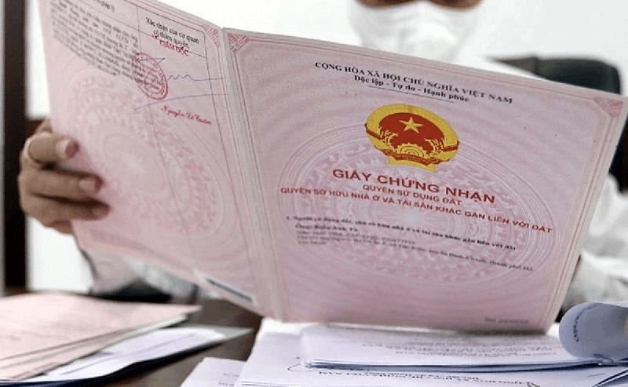
🔥
🔥
🔥
Giải hạng Nhất Quốc gia và Cúp Quốc gia 2026/27 công bố nhà tài trợ chính
Facebook Twitter Lưu bài viết Bản in Copy link Ngày 16/9, theo thông tin từ Công ty Bóng đá chuyên nghiệp Việt Nam (VPF), Ngân hàng Thương mại Cổ phần Sài Gòn Tài Lộc (SACOMBANK) chính thức trở thành Nhà tài trợ chính củ
🔥
🔥
🔥
Thứ trưởng Y tế Trần Văn Thuấn và ông Nguyễn Huy Ngọc bị khai trừ khỏi Đảng
Ngày 16/9, tại Trụ sở Trung ương Đảng, Ban Bí thư họp, xem xét đề nghị của Ủy ban Kiểm tra Trung ương về việc thi hành kỷ luật đảng viên vi phạm. Ban Bí thư nhận thấy, các ông: Trần Văn Thuấn , Ủy viên Ban Thường vụ Đảng
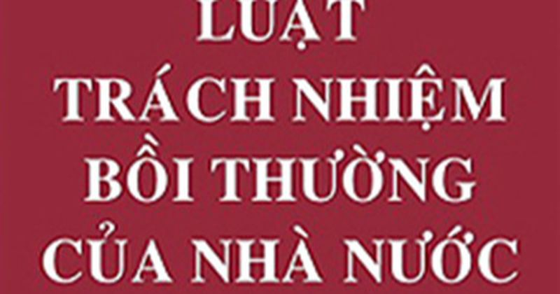
🔥Triển khai Luật sửa đổi, bổ sung một số điều của Luật trách nhiệm bồi thường của nhà nước
Triển khai Luật sửa đổi, bổ sung một số điều của Luật trách nhiệm bồi thường của nhà nước Luật sửa đổi, bổ sung một số điều của Luật Trách nhiệm bồi thường của Nhà nước số 15/2026/QH16 (Luật) được Quốc hội khóa XVI thông
🔥
🔥
🔥
🔥
🔥
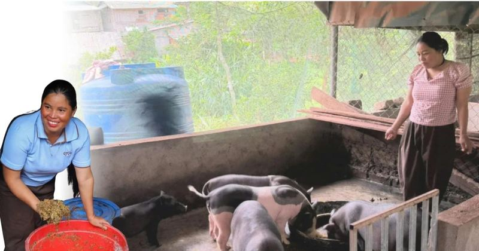
🔥Hỗ trợ bà con dân tộc thiểu số vùng biên giới Quảng Trị tiếp cận mô hình phát triển kinh tế mới
Góp phần cải thiện cuộc sống của phụ nữ dân tộc thiểu số vùng biên giới Vào những ngày trung tuần tháng 9, theo chân Phó Chủ tịch Ủy ban nhân dân xã Tà Rụt (tỉnh Quảng Trị), chúng tôi đến thôn A Đăng, địa phương có nhiều
🔥
Liên kết để doanh nghiệp tham gia sâu hơn vào chuỗi cung ứng công nghiệp
Cùng với sự dịch chuyển của chuỗi cung ứng và sự mở rộng của hoạt động đầu tư, sản xuất, Việt Nam đang có thêm nhiều cơ hội tham gia sâu hơn vào chuỗi giá trị công nghiệp. Tuy nhiên, yêu cầu đặt ra đối với doanh nghiệp c
🔥
🔥
Vụ xe Lexus dừng trên cao tốc dẫn đến tai nạn liên hoàn: Khi nào bị xử lý hình sự?
Xe Lexus, xe con và xe khách đều hư hỏng nặng sau vụ va chạm mạnh trên cao tốc Pháp Vân - Cầu Giẽ - Ảnh: Cục CSGT Theo thông tin báo chí phản ánh, khoảng 13h31 ngày 15-9, trên cao tốc Pháp Vân - Cầu Giẽ - Ninh Bình xảy r
🔥
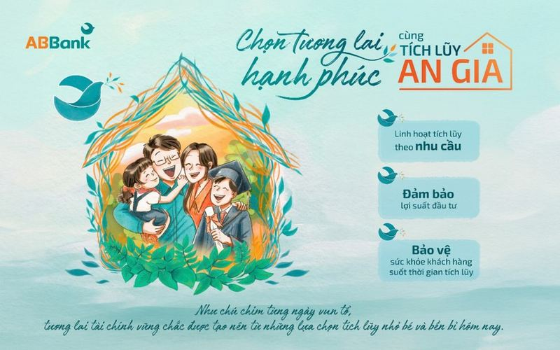
🔥
🔥
DNSE được vinh danh Top 10 công ty chứng khoán tư nhân nộp ngân sách lớn nhất Việt Nam
Ngày 15/9/2026, tại Lễ vinh danh các doanh nghiệp nộp ngân sách lớn nhất Việt Nam 2026 (Vietnam Largest Taxpayers – VNTAX 2026) do CafeF tổ chức, CTCP Chứng khoán DNSE được xướng tên ở vị trí Top 10 công ty chứng khoán t
🔥
Xe khách chở 19 người lật xuống mương thoát nước trên quốc lộ qua Đồng Nai
Ngày 16/9, Phòng Cảnh sát Phòng cháy, chữa cháy và cứu nạn, cứu hộ (PCCC và CNCH), Công an TP. Đồng Nai cho biết, lực lượng chức năng vừa giải cứu 19 người sau khi một xe khách giường nằm bị lật xuống mương thoát nước tr
🔥
🔥
Plaschem Group được sử dụng 10,8ha đất làm Cụm công nghiệp làng nghề Thạch Xá – Giai đoạn 1
TIN MỚI 10,8ha đất làm Cụm công nghiệp làng nghề Thạch Xá – Giai đoạn 1 Theo Quyết định số 4757/QĐ-UBND của UBND TP Hà Nội, Công ty cổ phần Tập đoàn Hóa chất nhựa (Plaschem Group) được sử dụng 108.705,4m2 đất tại xã Tây
🔥
🔥
Vụ Công ty Việt Mỹ và cảnh báo về những 'khoảng trống' phía sau các gói thầu y tế
Bốn khoảng trống cần rà soát Từ vụ Công ty CP Đầu tư Y tế Việt Mỹ, theo đại biểu, có những khoảng trống nào trong đấu thầu, thẩm định và giám sát mua sắm công cần được nhìn nhận, khắc phục? Trước hết, cần khẳng định việc
🔥
🔥
🔥
Tổng thống Ukraine nói chuyên cơ của ông bị UAV nhắm tới 2 lần ở Moldova
Theo báo Kyiv Independent, Tổng thống Ukraine Zelensky ngày 15/9 cho biết Nga đã 2 lần sử dụng UAV để đe dọa chuyên cơ của ông khi di chuyển qua không phận Moldova. "Chuyên cơ của tôi có mặt tại đó và đây là lý do UAV Ng
🔥
🔥
🔥
🔥
Trả lương nhân viên sau khi nghỉ việc, doanh nghiệp khấu trừ thuế TNCN thế nào?
Bà B.H. (Hà Nội) cho biết, người lao động ký hợp đồng lao động xác định thời hạn 12 tháng nhưng chấm dứt hợp đồng và nghỉ việc trước thời hạn. Đến ngày 5/8/2026, người lao động không còn quan hệ lao động với công ty.
🔥
🔥
⚡
Nhà vua Thái Lan và Hoàng hậu trải nghiệm lớp học tiếng Thái tại Đại học Hà Nội
Nhà vua Thái Lan và Hoàng hậu thăm Trường Đại học Hà Nội. Ảnh: Đỗ Thảo - Mekong ASEAN Phát biểu chào mừng, Phó Giáo sư, Tiến sỹ Nguyễn Văn Trào - Hiệu trưởng Trường Đại học Hà Nội, bày tỏ vinh dự đón Nhà vua và Hoàng hậu
⚡
 ⚡
⚡
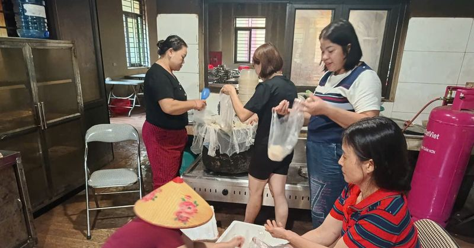
⚡
⚡
⚡
Tăng cường quan hệ giữa Quốc hội nhằm làm sâu sắc hơn quan hệ Đối tác Chiến lược Toàn diện Việt Nam-Australia
Facebook Twitter Lưu bài viết Bản in Copy link Tại cuộc gặp với một số nghị sỹ thuộc đảng đối lập và độc lập trong Quốc hội Australia ngày 15/9, Đại sứ Việt Nam tại Australia Phạm Hùng Tâm đã trao đổi về các biện pháp th
⚡
Nghiên cứu đổi mới tổ chức, phương thức hoạt động của Đảng phù hợp với kỷ nguyên số
Chiều 16/9, tại trụ sở Trung ương Đảng, Thường trực Ban Chỉ đạo Trung ương về Tổng kết thực tiễn và nghiên cứu sửa đổi, bổ sung Điều lệ Đảng (Ban Chỉ đạo) họp phiên thứ hai. Tổng Bí thư, Chủ tịch nước Tô Lâm , Trưởng Ban
⚡
Long Châu, Quỹ Hope và các đối tác dược phẩm cùng “San sẻ gánh nặng vì bệnh nhân ung thư”
Chương trình kết nối nguồn lực từ Long Châu, HOPE Foundation, các đối tác và cộng đồng để hỗ trợ chi phí điều trị cho bệnh nhân ung thư có hoàn cảnh khó khăn Để không ai đơn độc trên hành trình điều trị ung thư Với thông
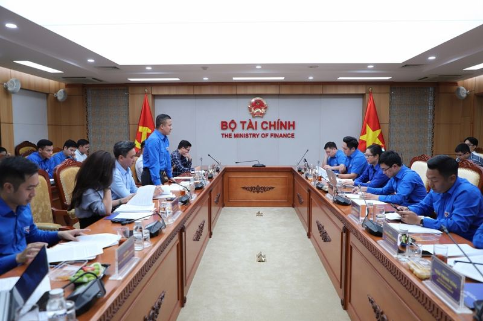
⚡Tuổi trẻ Bộ Tài chính nâng chất hoạt động, phát huy sức trẻ trong nhiệm vụ chuyên môn
Với quy mô hơn 72.000 đoàn viên sau quá trình sắp xếp, hợp nhất và tiếp nhận các tổ chức Đoàn mới, Đoàn Thanh niên Bộ Tài chính đang đứng trước yêu cầu nâng tầm hoạt động tương xứng với nguồn lực. Chuẩn hóa dữ liệu, gắn
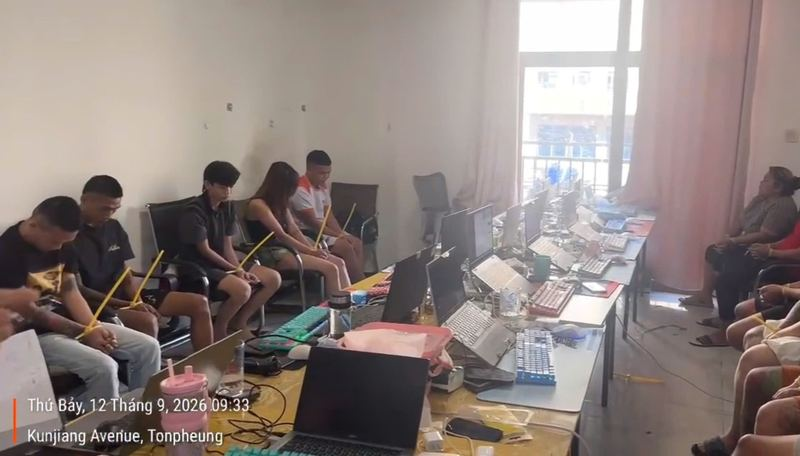
⚡
⚡
⚡
Thông tin mới nhất về tiến độ xây dựng tuyến đường bộ cao tốc Vinh-Thanh Thủy
Tuyến đường bộ cao tốc Vinh-Thanh Thủy có chiều dài khoảng 60km. Điểm đầu Km0+000 giao với đường cao tốc bắc-nam phía đông đoạn Diễn Châu-Bãi Vọt, thuộc địa phận xã Hưng Nguyên, tỉnh Nghệ An; điểm cuối kết nối vào Khu ki
⚡
Nhạc sĩ Trần Mạnh Cường kết nối tinh hoa dân gian với hơi thở của đương đại
Những “dấu ấn” của chàng nhạc sĩ 9x Trần Mạnh Cường bắt đầu hành trình nghệ thuật từ sớm và kiên trì xây dựng sự nghiệp theo hướng kết hợp sâu sắc giữa chất liệu dân gian Bắc Bộ với ngôn ngữ âm nhạc hiện đại. Nhắc đến an
⚡
Tìm kiếm ca khúc đại diện Việt Nam chinh phục Eurovision Song Contest Asia 2026
DAO Music Entertainment công bố “Thanh âm Việt Nam" Đồng hành với Tóc Tiên là giám đốc âm nhạc Huy Tuấn và 5 đội sáng tạo cùng 5 ca khúc tương ứng: Em Tiên do đội SHUBE (nhà sản xuất DươngK - nhạc sĩ Harosé) thực hiện; a
⚡
⚡
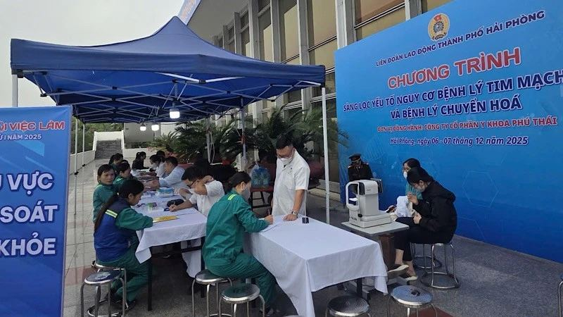
⚡
⚡
[Video]Bắc Bộ, Thanh Hóa và Nghệ An tiếp tục mưa lớn, nguy cơ lũ quét, sạt lở
Dự báo viên Phạm Thị Thanh Hoa, Phòng Dự báo thời tiết, Trung tâm Dự báo Khí tượng thủy văn quốc gia thông tin về mưa lớn tại Bắc Bộ và các tỉnh Thanh Hoá, Nghệ An. Theo dự báo viên Phạm Thị Thanh Hoa, Phòng Dự báo thời
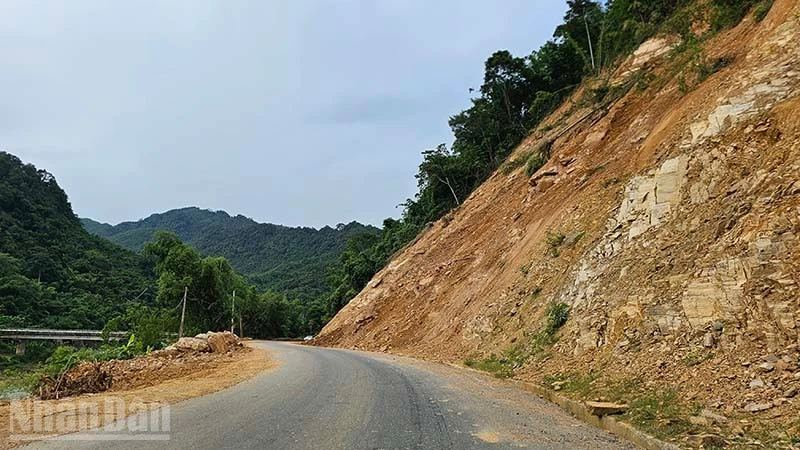
⚡
⚡
⚡
Ban Bí thư ban hành kế hoạch đẩy mạnh học tập, thực hành tư tưởng, đạo đức, phương pháp, phong cách Hồ Chí Minh
Kế hoạch nhằm cụ thể hóa các quan điểm, nhiệm vụ, giải pháp của Chỉ thị số 07-CT/TW, bảo đảm tổ chức thực hiện đồng bộ, thống nhất, hiệu quả trong toàn Đảng, hệ thống chính trị; tạo chuyển biến thực chất trong học tập, t
⚡
[Video] Thời sự 24h ngày 16/9/2026: Hà Nội tập trung tối đa chữa trị cho nạn nhân trong vụ cháy khiến 5 người tử vong
Sáng 16/9, tại Học viện Chính trị Quốc gia Hồ Chí Minh, Thủ tướng Chính phủ Lê Minh Hưng đã trao đổi và truyền đạt chuyên đề “Nâng cao năng lực điều hành của Chính phủ, tạo đột phá mạnh mẽ cho phát triển nhanh, bền vững
⚡
Thủ tướng chỉ đạo "nóng" về vấn đề thiếu SGK và cung ứng suất ăn học đường
(Dân trí) - Cùng với yêu cầu xử lý triệt để, dứt điểm tình trạng thiếu sách giáo khoa trong thời gian sớm nhất, Thủ tướng lưu ý trách nhiệm của các địa phương trong bảo đảm cung ứng suất ăn học đường. Nhiều vấn đề nóng t
⚡
Tổng Bí thư, Chủ tịch nước: Chỉ đưa vào Điều lệ Đảng những vấn đề đã được tổng kết, kiểm nghiệm
Facebook Twitter Lưu bài viết Bản in Copy link Chiều 16/9, tại Trụ sở Trung ương Đảng, Thường trực Ban Chỉ đạo Trung ương về Tổng kết thực tiễn và nghiên cứu sửa đổi, bổ sung Điều lệ Đảng (Ban Chỉ đạo) họp Phiên thứ hai.
⚡
⚡
Tổng Bí thư, Chủ tịch nước Tô Lâm chủ trì phiên họp về sửa đổi, bổ sung Điều lệ Đảng
Tổng Bí thư, Chủ tịch nước Tô Lâm chủ trì phiên họp Thường trực Ban Chỉ đạo Trung ương về tổng kết thực tiễn và nghiên cứu sửa đổi, bổ sung Điều lệ Đảng. Ảnh: TTXVN Tổng Bí thư, Chủ tịch nước Tô Lâm phát biểu chỉ đạo. Ản
⚡
⚡
Thủ tướng yêu cầu khẩn trương điều tra vụ cháy nhà lúc nửa đêm làm 5 người chết
Cảnh sát phát hiện 5 nạn nhân đã tử vong trong vụ cháy nhà và bàn giao cho lực lượng y tế - Ảnh: H.Q. Phó thủ tướng thường trực Phạm Gia Túc vừa ký công điện của Thủ tướng về vụ cháy nhà dân tại số 2B ngách 264/2 phố Thụ
⚡
Thủ tướng yêu cầu khẩn trương điều tra vụ cháy khiến 5 người tử vong ở Hà Nội
Ngày 16/9, Phó Thủ tướng Thường trực Chính phủ Phạm Gia Túc ký Công điện của Thủ tướng Chính phủ về vụ cháy nhà dân tại số 2B, ngách 264/2 phố Thụy Khuê, phường Tây Hồ, thành phố Hà Nội. Khoảng 1 giờ 50 phút ngày 16/9, x
⚡
Ngày 16-9: Tìm được thêm 14 bộ hài cốt liệt sĩ tại rãnh chôn mới trong công viên Lê Thị Riêng
Ngày 16-9, Đội K74 tìm thấy thêm 14 bộ hài cốt liệt sĩ tại rãnh chôn thứ hai, khu A công viên Lê Thị Riêng - Ảnh: Bộ Tư lệnh TP.HCM Theo báo cáo của Đội Quy tập hài cốt liệt sĩ thuộc Bộ Tư lệnh TP.HCM, ngày 16-9, các lực
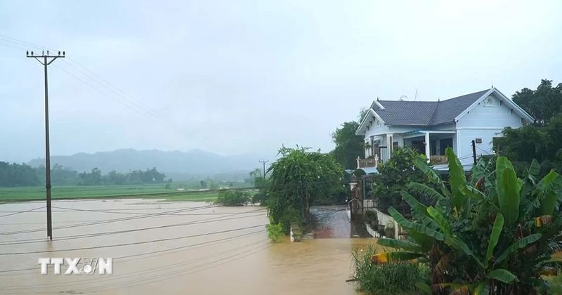
⚡Thanh Hóa: Nước sông dâng cao, chủ động sơ tán 191 hộ trong tổng số 734 khẩu đến nơi an toàn
Facebook Twitter Lưu bài viết Bản in Copy link Chiều 16/9, Ban chỉ huy phòng thủ dân sự tỉnh Thanh Hóa cho biết để ứng phó với mưa lớn, các địa phương trong tỉnh đã chủ động sơ tán 191 hộ/734 khẩu sinh sống tại các khu v
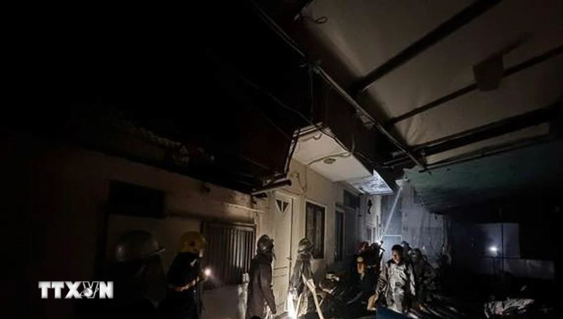
⚡Hà Nội: Thủ tướng yêu cầu khẩn trương điều tra nguyên nhân vụ cháy tại Tây Hồ
Facebook Twitter Lưu bài viết Bản in Copy link Ngày 16/9, Phó Thủ tướng Thường trực Chính phủ Phạm Gia Túc ký Công điện số 65/CĐ-TTg của Thủ tướng Chính phủ về vụ cháy nhà dân tại số 2B ngách 264/2 phố Thụy Khuê, phường
⚡
⚡
⚡
Việt Nam sẽ có “làng trên núi” 3.000ha gồm khu nghỉ dưỡng, vui chơi giải trí cao cấp, sân golf, cáp treo và tàu hỏa leo núi
Việt Nam sẽ có “làng trên núi” 3.000ha gồm khu nghỉ dưỡng, vui chơi giải trí cao cấp, sân golf, cáp treo và tàu hỏa leo núi Theo Thanh Phong | 16/09/2026 18:39 PM | Kinh doanh Theo dõi Cafebiz.vn trên Khu vực nghiên cứu
⚡
Vụ suất ăn bán trú có thịt gà còn sống, UBND phường thông tin chính thức
(Dân trí) - UBND phường Bình Tân (TPHCM) vừa có thông tin chính thức về vấn đề suất ăn tại Trường THCS Hồ Văn Long, đồng thời yêu cầu nhà trường ngưng hợp tác với đơn vị đang cung cấp suất ăn. Học sinh bị nổi mẩn ngứa ng
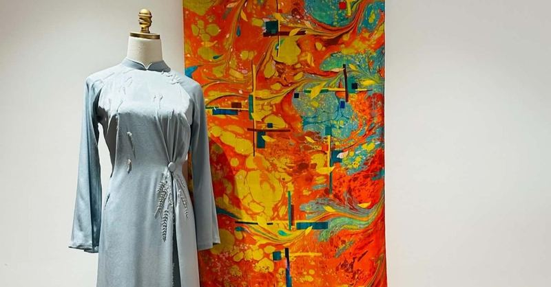
⚡Động thái khối ngoại trước thời điểm nâng hạng: Tín hiệu từ dòng tiền và thanh khoản
Càng gần thời điểm thị trường chứng khoán Việt Nam chính thức được FTSE Russell nâng hạng, động thái của khối ngoại càng được chú ý. Sau thời gian dài duy trì trạng thái bán ròng, dòng vốn ngoại đang xuất hiện những chuy
“Mở” hướng sinh kế mới, từng bước chuyển đổi hoạt động buôn bán thịt chó mèo
Facebook Twitter Lưu bài viết Bản in Copy link Ngày 16/9, Chi cục Chăn nuôi, Thủy sản và Thú y Hà Nội đã phối hợp cùng Tổ chức Soi Dog Foundation và Doanh nghiệp xã hội Truyền thông thay đổi hành vi hướng tới phát triển
Hạ tầng logistics: Gỡ điểm nghẽn kết nối để giảm chi phí, nâng sức cạnh tranh
Facebook Twitter Lưu bài viết Bản in Copy link Hạ tầng logistics không chỉ còn là dịch vụ hỗ trợ đơn thuần mà đã trở thành nền tảng chiến lược quyết định năng lực cạnh tranh của nền kinh tế. Tuy nhiên, sự thiếu đồng bộ t
VietnamPrintPack 2026: Đưa công nghệ mới vào ngành in và bao bì Việt Nam
Facebook Twitter Lưu bài viết Bản in Copy link Ngày 16/9, tại Trung tâm hội chợ và triển lãm Sài Gòn (SECC), Thành phố Hồ Chí Minh, Công ty cổ phần Quảng cáo và Hội chợ thương mại VINEXAD và Công ty Trách nhiệm hữu hạn M
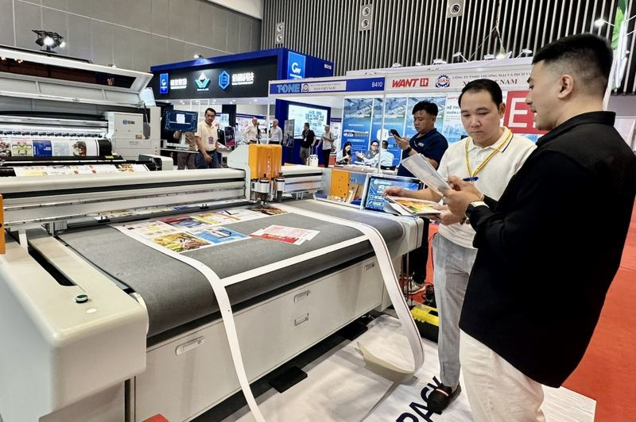
🔥
FLC lên tiếng trước nhiều áp lực, mong muốn các nhà đầu tư tiếp tục đồng hành, chia sẻ
TIN MỚI Ngày 15/9/2026, đồng chí Lê Tuấn Vũ, Phó Bí thư Đảng ủy, Chủ tịch UBND phường Cao Xanh chủ trì buổi làm việc với Tập đoàn FLC về tình hình, tiến độ triển khai dự án gồm các hạng mục nhà ở xã hội và nhà ở thương m
🔥
🔥
Làm tiếp thị liên kết, livestream chào hàng trên TikTok, nộp thuế bao nhiêu?
Cụ thể, doanh thu từ hoạt động tiếp thị liên kết trên nền tảng TikTok, do TikTok chi trả vào tài khoản của hộ kinh doanh là hoạt động dịch vụ, hoa hồng đại lý, áp dụng thuế suất thuế thu nhập cá nhân là 2%. Hộ kinh doanh
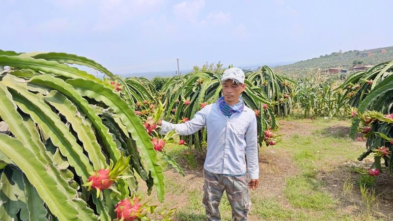
🔥
🔥
🔥
🔥
Viettel chính thức tắt sóng 2G, đưa người dùng vào kỷ nguyên mạng tốc độ cao
Năm 2024, Viettel khai trương mạng 5G, góp phần đẩy tốc độ Internet di động tại Việt Nam Hành trình ấy bắt đầu từ ngày 15/10/2004, khi Viettel khai trương mạng di động với đầu số 098 và bước vào một thị trường mà điện th
🔥
Ninh Bình: Khởi công dự án giao thông gần 7.000 tỷ đồng, xây mới cầu Hoàng Long
Dự án do Ban Quản lý dự án đầu tư xây dựng số 1 tỉnh Ninh Bình làm chủ đầu tư. Liên danh Tập đoàn Kinh tế Xuân Thành và Tập đoàn Cường Thịnh Thi, những đơn vị giàu kinh nghiệm trong lĩnh vực thi công hạ tầng giao thông q
🔥
Đại gia Đặng Thành Tâm: "Việt Nam không thể chỉ mãi là một công xưởng sản xuất"
TIN MỚI Đây là nội dung được ông Đặng Thành Tâm, Chủ tịch KBC chia sẻ tại tọa đàm "Kiến tạo nguồn lực tăng trưởng quốc gia: Vài trò của doanh nghiệp dẫn đầu trong kỷ nguyên mới". Chương trình diễn ra trong khuôn khổ Lễ v
 🔥
🔥
Bảng vàng Quỹ Xã hội - Từ thiện Báo Sài Gòn Giải Phóng (từ ngày 9 đến 15-9)
Giúp anh Nguyễn Văn Hà HCCG 26-37 (14-09-2026): Phan Cao Ky (CK): 10.000đ, Hoang Thi Van (CK): 50.000đ, Bạn đọc TK số ...71284 (CK): 500.000đ, Kieu Phan Khanh Dung (CK): 100.000đ, Tran Cong Danh (CK): 500.000đ, Bạn đọc T
🔥
Dừng đột ngột trên cao tốc gây tai nạn, tài xế Lexus có thể đối mặt với điều gì?
Vụ tai nạn liên hoàn xảy ra chiều 15/9 trên cao tốc Pháp Vân - Cầu Giẽ - Ninh Bình, đoạn qua địa bàn xã Phú Xuyên, Hà Nội, khi trời mưa, đường trơn. Ba phương tiện gồm một xe Lexus, một ô tô con và xe khách 16 chỗ bị hư
🔥
🔥
Phát hiện chào mào đỏ phương Bắc bạch tạng cực hiếm, 30.000 con mới có một
Hai con chim bạch tạng quý hiếm tại Trung tâm cứu hộ động vật. Ảnh: Trung tâm cứu hộ và phục hồi động vật hoang dã Raven Ridge Trung tâm cứu hộ và phục hồi động vật hoang dã Raven Ridge tại bang Pennsylvania (Mỹ) vừa ghi
🔥
Techcombank vượt mốc 10.000 tỷ đồng nộp ngân sách, củng cố vị thế Doanh nghiệp Quốc gia
TIN MỚI Ngày 15/9, tại Lễ Vinh danh các Doanh nghiệp nộp Ngân sách lớn nhất 2026 do CafeF tổ chức, Ngân hàng TMCP Kỹ Thương Việt Nam (Techcombank) được vinh danh là một trong những doanh nghiệp có đóng góp nổi bật vào ng
🔥
⚡
⚡
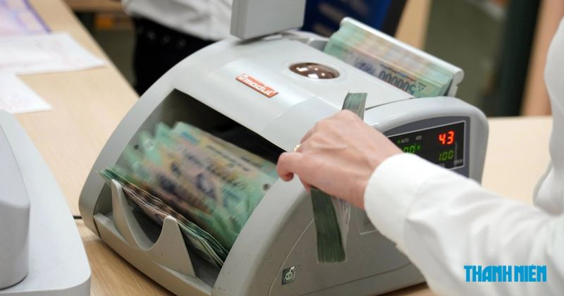
⚡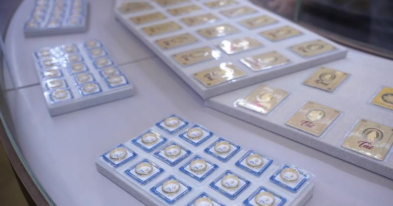
Một DN sắp trả thêm 1.500 đồng/cp sau năm trả cổ tức kỷ lục, đều đặn "chia tiền" suốt 11 năm
TIN MỚI CTCP Tập đoàn Đầu tư DIN Capital (HNX: PDB) vừa thông báo ngày đăng ký cuối cùng để thực hiện quyền tạm ứng cổ tức năm 2026 bằng tiền là 28/9. Với tỷ lệ 15%, cổ đông sở hữu mỗi cổ phiếu PDB sẽ nhận 1.500 đồng. Ng
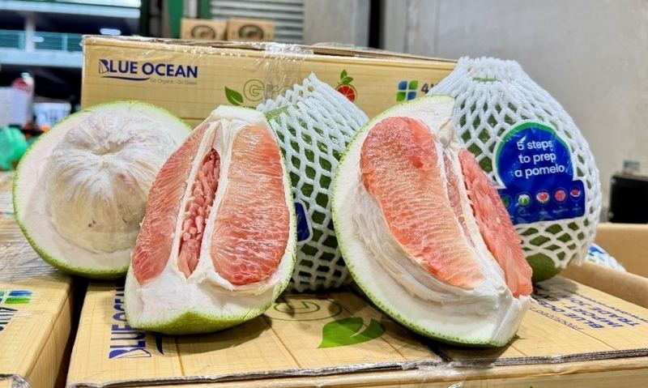
Trường THPT Trần Nguyên Hãn kích hoạt “Ngày học số” và dự án “Trường học xanh”
Các thầy cô giáo Trường THPT Trần Nguyên Hãn ký cam kết thực hiện dự án "Trường học xanh". Với thông điệp “Học tập thông minh - Sáng tạo - An toàn - Trách nhiệm”, dự án “Ngày học số” hướng đến mục tiêu giúp học sinh biết
Microsoft từng đặt nhiều kỳ vọng vào thứ này, nhưng cuối cùng lại cho nó “đi thật xa để trở về”
Microsoft từng đặt nhiều kỳ vọng vào thứ này, nhưng cuối cùng lại cho nó “đi thật xa để trở về” Theo Tuấn Nguyễn | 16/09/2026 16:10 PM | Công nghệ Theo dõi Cafebiz.vn trên Từng được Microsoft xem là thay đổi lớn nhất đối
PNJ công bố thông tin bất thường về thời gian thanh toán cho khách bán vàng, kim cương
Ngày 15/9, HĐQT CTCP Vàng bạc Đá quý Phú Nhuận (PNJ) công bố thông tin bất thường về việc rút ngắn thời gian thanh toán cho khách hàng bán vàng, kim cương. Theo đó, HĐQT PNJ ban hành nghị quyết thông qua chủ trương điều
Hàng chục 'quái xế' tụ tập ở biệt thự rồi chạy xe độ chế náo loạn Vũng Tàu
Ngày 16/9, Phòng Cảnh sát hình sự, Công an TPHCM phối hợp Công an phường Vũng Tàu triệu tập 21 đối tượng để điều tra, làm rõ hành vi gây mất trật tự công cộng. Trước đó, qua công tác rà soát trên không gian mạng, lực lượ
🔥
🔥
🔥
🔥
Vụ bé trai 14 tuổi bị máy cày lật úp đè tử vong: Các cơ quan tố tụng đã thụ lý nguồn tin tội phạm để điều tra
Hiện trường vụ tai nạn - Ảnh: A.X. Liên quan vụ bé trai 14 tuổi chết sau khi máy cày lật úp đè trúng người ở Đồng Tháp , ngày 16-9, nguồn tin của Tuổi Trẻ cho hay các cơ quan tố tụng của tỉnh này đã thụ lý nguồn tin tội
🔥
🔥
🔥
Hàn Quốc yêu cầu Triều Tiên trả hơn 32 triệu USD vì đánh sập văn phòng liên lạc
Theo hãng thông tấn Anadolu, Tòa án Trung tâm Quận Seoul ngày 16/9 đã ra phán quyết yêu cầu Triều Tiên bồi thường cho Hàn Quốc 44,6 tỷ won vì phá hủy văn phòng liên lạc liên Triều tại thành phố biên giới Kaesong cách đây
🔥
🔥
Triển lãm FBC ASEAN 2026: Kết nối chuỗi cung ứng ngành công nghiệp sản xuất
Triển lãm giao thương quốc tế ngành chế tạo 2026 diễn ra từ ngày 16-18/9 tại Trung tâm Triển lãm Việt Nam (Hà Nội). Ảnh: FBC ASEAN Ngày 16/9, Triển lãm giao thương quốc tế ngành chế tạo lần thứ 10 - FBC ASEAN 2026 (EMIDA
🔥
🔥
🔥
🔥
Tên lửa AGM-190A Havoc Spear lần đầu thực chiến, tiêu diệt mục tiêu cách 740 km
Một chiếc AC-130J Ghostrider của Bộ Tư lệnh Tác chiến Đặc biệt Không quân Mỹ (AFSOC) đã phóng hai quả tên lửa hành trình AGM-190A Havoc Spear vào hai mục tiêu mặt đất riêng biệt trong khu vực trách nhiệm của Bộ Tư lệnh C
🔥
🔥
🔥
Hội chợ Triển lãm Quốc tế Greentech Hanoi 2026 hướng đến chuyển đổi xanh
Greentech Hanoi 2026 được tổ chức với quy mô 400 gian hàng, trong đó, 200 gian hàng của các doanh nghiệp trong nước và 200 gian hàng quốc tế đến từ nhiều quốc gia như Nhật Bản, Hàn Quốc, Trung Quốc, Ấn Độ, Pháp… Các doan
🔥
Rà soát hồ sơ tinh giản biên chế, An Giang phát hiện chi sai hơn 1 tỷ đồng
Sáng 16/9, tại buổi giao ban báo chí định kỳ tỉnh An Giang, đại diện Sở Nội vụ tỉnh thông tin về kết quả rà soát, thẩm định hồ sơ và chi trả chính sách tinh giản biên chế theo Nghị định số 178/2024 của Chính phủ. Cụ thể,
🔥
🔥
🔥
🔥
Link xem trực tiếp bóng đá U23 Thái Lan vs U23 Kyrgyzstan, 14h ngày 16/9
Link tường thuật trực tiếp U23 Thái Lan vs U23 Kyrgyzstan: https://vietnamnet.vn/truc-tiep-bong-da-u23-thai-lan-vs-u23-kyrgyzstan-asiad-20-2555591.html Link xem trực tiếp trên VTV6: https://vtvgo.vn/channel/13 Với chủ nh
🔥
🔥
🔥
🔥
🔥
Gia đình người có công có được hỗ trợ thêm tiền khi đất bị thu hồi làm dự án không?
Nhà tôi có đất bị thu hồi làm dự án, mẹ tôi là người có công trong kháng chiến chống Mỹ cứu nước, vậy xin hỏi gia đình tôi có được hưởng chế độ hỗ trợ người có công không? Bạn đọc Hồng Châu (TP.HCM) gửi câu hỏi. Luật sư
🔥
🔥
Số lượt khám tăng kỷ lục, hai bệnh viện lớn nhất TPHCM vận hành như thế nào?
Ngày 7/9, Bệnh viện Chợ Rẫy ghi nhận gần 10.000 lượt người bệnh đến khám ngoại trú và điều trị, trong đó có 8.819 lượt khám ngoại trú và 1.181 lượt điều trị trong ngày. Theo ghi nhận của VietNamNet, sáng 11/9, hàng nghìn
🔥
🔥
Mẹ mắc bệnh nặng, lo con trai mang di chứng sau tai nạn không nơi nương tựa
Con trai tai nạn nương tựa người mẹ già bệnh tật Căn nhà cấp bốn cũ kỹ nằm nép bên cánh đồng ở thôn Tân Hóa là nơi bà Nguyễn Thị Lý (SN 1961) và người con trai Phạm Thanh Hà (SN 1988) nương tựa vào nhau suốt nhiều năm qu
🔥
🔥
🔥
Triển khai hiệu quả quan hệ Đối tác Chiến lược toàn diện Việt Nam - Thái Lan
Tổng Bí thư, Chủ tịch nước Tô Lâm và Phu nhân Ngô Phương Ly cùng Nhà Vua Thái Lan Maha Vajiralongkorn Phra Vajiraklaochaoyuhua và Hoàng hậu Suthida Bajrasudhabimalalakshana. Ảnh: TTXVN Ngày 15-9, tại Hà Nội, trong khuôn
🔥
🔥
🔥
⚡
⚡
Sạt lở khiến đá tràn vào nhà, vùi lấp giường ngủ của người dân ở Thanh Hóa
(Dân trí) - Mưa lớn kéo dài gây sạt lở nhiều nơi ở xã Trung Hạ, Thanh Hóa, đất đá từ taluy dương tràn vào nhà dân, làm sập một phần tường và giường ngủ. Ngày 16/9, UBND xã Trung Hạ (tỉnh Thanh Hóa), thông tin do mưa lớn
⚡
Nhà vua Thái Lan và Hoàng hậu dự lớp học tiếng Thái cùng sinh viên Việt Nam
Phát biểu chào mừng, PGS.TS Nguyễn Văn Trào, Hiệu trưởng Trường Đại học Hà Nội bày tỏ vinh dự đón Nhà vua và Hoàng hậu đến thăm nhà trường. Đây là nguồn động viên đối với các giảng viên, cán bộ và sinh viên. Nhà vua Thái
Lũ sông Bùi vượt báo động 3, hàng trăm chiến sĩ và dân dầm mưa đắp đê chống lũ ngoại thành Hà Nội
Lực lượng bộ đội xúc cát vào bao để đắp gia cố đê chống nước tràn vào khu dân cư - Ảnh: G.C. Chiều 16-9, mực nước sông Bùi tại trạm Yên Duyệt lên 7,22m, cao hơn báo động 3 khoảng 0,22m và tiếp tục dâng. Nước trên sông Bù
Đà Nẵng lắp đặt Starlink phủ sóng 14 điểm "vùng lõm" viễn thông vùng cao, biên giới
Ông Hồ Quang Bửu, Phó Chủ tịch UBND TP Đà Nẵng vừa ký kế hoạch triển khai lắp đặt Starlink cho vùng lõm sóng Theo đó, Đà Nẵng sẽ lắp đặt thiết bị đầu cuối vệ tinh Starlink và hỗ trợ miễn phí dịch vụ viễn thông vệ tinh tr
Thủ tướng chỉ đạo điều tra, truy trách nhiệm sau vụ cháy làm 5 người chết
(Dân trí) - Theo yêu cầu của Thủ tướng, Hà Nội cần phối hợp với Bộ Công an khẩn trương điều tra nguyên nhân vụ cháy làm 5 người chết trên địa bàn, làm rõ và xử lý nghiêm với cá nhân có trách nhiệm liên quan. Phó Thủ tướn
Biển Đông sẽ xuất hiện 3-5 cơn bão, nhiều đợt mưa lớn trên các vùng miền
Dự báo từ nay đến hết năm 2026, còn khoảng 8-10 đợt mưa lớn ở các vùng miền Ngày 16/9, thông tin từ Bộ Nông nghiệp và Môi trường cho biết, từ đầu năm 2026 đến ngày 14/9, cả nước đã xảy ra 20/22 loại hình thiên tai trên c
Cầu Phước Khánh trên cao tốc Bến Lức - Long Thành sắp hoàn thành thảm nhựa
(Dân trí) - Nhà thầu đang tập trung nhân lực, máy móc thảm nhựa mặt cầu Phước Khánh (thuộc cao tốc Bến Lức - Long Thành), dự kiến hoàn thành vào ngày 21/9 để kịp đưa toàn bộ gói thầu về đích trong tháng 9. Ngày 16/9, ông
Chỉ đạo, điều hành của Chính phủ, Thủ tướng Chính phủ ngày 16/9/2026 (1)
Hiện trường vụ cháy Công điện của Thủ tướng Chính phủ về vụ cháy nhà dân tại số 2B ngách 264/2 phố Thụy Khuê, phường Tây Hồ, thành phố Hà Nội Phó Thủ tướng Thường trực Chính phủ Phạm Gia Túc vừa ký Công điện số 65/CĐ-TTg
Việt Nam-Áo: Trao đổi kinh nghiệm quốc tế về giám sát thị trường tài chính
Facebook Twitter Lưu bài viết Bản in Copy link Thứ trưởng Bộ Tài chính Nguyễn Đức Chi và bà Mariana Kühnel, tân Giám đốc điều hành Cơ quan Giám sát Thị trường Tài chính Áo (FMA), đã có buổi làm việc về kinh nghiệm quản l
Techcombank Summit 2026: Ra mắt Techcom Wealth - Kiến tạo và trao truyền giá trị qua thế hệ
TIN MỚI Tuy nhiên, khi quy mô tài sản ngày càng lớn và cấu trúc tài sản ngày càng đa dạng, làm thế nào để tài sản tiếp tục tạo ra giá trị qua nhiều thế hệ, không chỉ được chuyển giao mà còn được kiến tạo, phát triển và n
60 cán bộ, chiến sĩ công an dọn hàng chục tấn rác trên bãi biển Nhật Lệ sau mưa lũ
Ngày 16/9, Phòng Cảnh sát Cơ động , Công an tỉnh Quảng Trị cho biết, đơn vị đã chủ động rà soát, chuẩn bị lực lượng, phương tiện và trang thiết bị phục vụ công tác phòng, chống thiên tai, cứu nạn, cứu hộ. Bãi biển Nhật L
Ông Triệu Tài Vinh chủ trì Hội nghị phản biện xã hội dự thảo Nghị định hướng dẫn thi hành Luật Tín ngưỡng, tôn giáo
Phát biểu khai mạc, ông Triệu Tài Vinh - Phó Bí thư Đảng ủy MTTQ, các đoàn thể T.Ư nhấn mạnh, Hội nghị được tổ chức nhằm phát huy vai trò của MTTQ Việt Nam trong tham gia xây dựng pháp luật, tập hợp ý kiến phản biện của
Dự án Chuyên gia Chuyển đổi số (DCE) khép lại sau 4 năm: Trao chứng chỉ cho 70 lượt giáo viên, cán bộ quản lý giáo dục nghề nghiệp
Buổi lễ quy tụ đại diện WUS, HLFT (trực tuyến), Ban Giám hiệu VGU cùng lãnh đạo, học viên từ hơn 20 cơ sở giáo dục nghề nghiệp tại TPHCM, với các phần: chiếu video hành trình dự án, phát biểu các bên, chia sẻ của học viê
Du lịch Huế làm mới chuỗi sản phẩm, kéo dài thời gian lưu trú của du khách
Facebook Twitter Lưu bài viết Bản in Copy link Du lịch Huế đang chuyển hướng từ khai thác điểm đến sang xây dựng những chuỗi trải nghiệm liên tục, kết nối di sản, văn hóa, ẩm thực, cảnh quan và dịch vụ, qua đó kéo dài th
Du lịch Việt Nam trong cuộc đua giá trị: Lấy chất lượng trải nghiệm làm sức cạnh tranh
Tỷ lệ du khách quốc tế quay trở lại Việt Nam ở mức cao theo dữ liệu đặt phòng của Agoda đang mở ra cơ hội nâng chất lượng và giá trị du lịch. Trao đổi với phóng viên Báo SGGP, Cục trưởng Cục Du lịch quốc gia Việt Nam Ngu
Dấu mốc mới vun đắp hữu nghị, củng cố Đối tác chiến lược toàn diện Việt Nam - Thái Lan
Chuyến thăm cấp Nhà nước tới Việt Nam của Nhà vua Thái Lan Maha Vajiralongkorn Phra Vajiraklaochaoyuhua và Hoàng hậu, diễn ra đúng dịp hai nước kỷ niệm 50 năm thiết lập quan hệ ngoại giao, mang ý nghĩa lịch sử và tạo thê
Việt Nam sẽ có “làng trên núi” 3.000ha gồm khu nghỉ dưỡng, vui chơi giải trí cao cấp, sân golf, cáp treo và tàu hỏa leo núi
TIN MỚI UBND tỉnh Phú Thọ vừa phê duyệt nhiệm vụ Quy hoạch phân khu tỷ lệ 1/2.000 Khu du lịch, sinh thái nghỉ dưỡng, vui chơi giải trí cao cấp, sân golf tại các xã Vân Sơn, Mường Bi, Mai Châu và Mai Hạ. Khu vực nghiên cứ
Thiên Lộc thông tin chính sách bồi thường, GPMB Dự án Bắc Thăng Long Urban City
TIN MỚI Chiều 15-9, Ban Quản lý dự án Đầu tư - Hạ tầng xã Thiên Lộc phối hợp với Hội đồng Bồi thường, hỗ trợ, tái định cư và Tổ công tác giải phóng mặt bằng xã tổ chức hội nghị triển khai công tác giải phóng mặt bằng (GP
Nam Long & Hành trình 34 năm kiên định: Khi "giá trị thực" chạm vào cảm xúc
Thị trường bất động sản trong hơn hai thập kỷ qua từng đi qua rất nhiều chu kỳ. Sau mọi biến động, thực tế đã chứng minh một chân lý bất biến: Dù ở chu kỳ nào, những thứ xã hội luôn cần như nhà ở, hạ tầng, đô thị, cộng đ

Cập nhật mới nhất trên eTax Mobile: Người dùng cần kiểm tra thông tin sau càng sớm càng tốt
Cập nhật mới nhất trên eTax Mobile: Người dùng cần kiểm tra thông tin sau càng sớm càng tốt Theo Khả Văn | 16/09/2026 07:17 AM | Công nghệ Theo dõi Cafebiz.vn trên Mới đây, ứng dụng eTax Mobile đã bổ sung tiện ích giúp n
Nhận định bóng đá U23 Thái Lan vs U23 Kyrgyzstan: ‘Voi chiến’ chờ 3 điểm
U23 Thái Lan bước vào ASIAD 2026 với mục tiêu giành trọn 3 điểm trước đối thủ U23 Kyrgyzstan, qua đó tạo lợi thế trong cuộc đua giành vé đi tiếp ở bảng A. Với bảng đấu có chủ nhà U23 Nhật Bản và U23 Hong Kong, trận ra qu
⚡
⚡
⚡
⚡
Thông qua kết quả kiểm tra, giám sát đối với Ban Thường vụ Đảng ủy Quốc hội
Dự hội nghị có các đồng chí: Trần Thanh Mẫn, Ủy viên Bộ Chính trị, Bí thư Đảng ủy Quốc hội, Chủ tịch Quốc hội; Đỗ Văn Chiến, Ủy viên Bộ Chính trị, Phó Bí thư Thường trực Đảng ủy Quốc hội, Phó Chủ tịch Thường trực Quốc hộ
⚡
46 người đau bụng, nôn sốt sau khi ăn bánh mì, mẹ và vợ chủ tiệm cùng nhập viện
Đến ngày 16/9, Bệnh viện Đa khoa khu vực Cam Lộ đã tiếp nhận, điều trị 46 trường hợp liên quan vụ việc nghi ngộ độc thực phẩm. Các bệnh nhân có biểu hiện đau bụng, buồn nôn, nôn, sốt, tiêu chảy và mất nước; chưa ghi nhận
⚡
Đại tướng Nguyễn Trọng Nghĩa chủ trì phiên họp Hội đồng Thi đua-Khen thưởng Bộ Quốc phòng
Đại tướng Nguyễn Trọng Nghĩa, Ủy viên Bộ Chính trị, Bí thư Trung ương Đảng, Ủy viên Thường vụ Quân ủy Trung ương, Chủ nhiệm Tổng cục Chính trị Quân đội nhân dân Việt Nam, Chủ tịch Hội đồng Thi đua-Khen thưởng Bộ Quốc phò
⚡
Nghiên cứu sửa đổi, bổ sung Điều lệ Đảng phải rõ sản phẩm, kiểm soát được tiến độ
Dự phiên họp có đồng chí Trần Cẩm Tú, Ủy viên Bộ Chính trị, Thường trực Ban Bí thư; các đồng Ủy viên Bộ Chính trị, Ủy viên Ban Bí thư, Ủy viên Trung ương Đảng, Thường trực Ban Chỉ đạo; lãnh đạo các ban, bộ, ngành Trung ư
⚡
Tổng Bí thư, Chủ tịch nước: Chỉ đưa vào Điều lệ Đảng những vấn đề đã được tổng kết, kiểm nghiệm
Tổng Bí thư, Chủ tịch nước Tô Lâm phát biểu chỉ đạo - Ảnh: TTXVN Cùng dự Phiên họp có đồng chí Trần Cẩm Tú, Ủy viên Bộ Chính trị, Thường trực Ban Bí thư; các đồng chí Ủy viên Bộ Chính trị, Ủy viên Ban Bí thư, Ủy viên Tru
⚡
Thủ tướng yêu cầu giải quyết dứt điểm thiếu sách giáo khoa trong thời gian ngắn nhất
Thủ tướng yêu cầu giải quyết dứt điểm thiếu sách giáo khoa trong thời gian ngắn nhất Thủ tướng Lê Minh Hưng yêu cầu giải quyết ngay, có thời hạn cụ thể, xử lý triệt để, dứt điểm trong thời gian ngắn nhất tình trạng thiếu
⚡
⚡
⚡
Đoàn Bộ Chính trị, Ban Bí thư làm việc với Ban Thường vụ Tỉnh ủy Ninh Bình
Facebook Twitter Lưu bài viết Bản in Copy link Chiều 16/9, Đoàn kiểm tra, giám sát số 237 của Bộ Chính trị, Ban Bí thư do đồng chí Trần Đức Thắng, Ủy viên Bộ Chính trị, Bí thư Thành ủy Hà Nội làm Trưởng đoàn đã làm việc
⚡
⚡
Thông qua dự thảo kết quả kiểm tra, giám sát đợt 3 đối với Ban Thường vụ Đảng ủy Quốc hội
Facebook Twitter Lưu bài viết Bản in Copy link Chiều 16/9, tại Nhà Quốc hội, Tổng Bí thư, Chủ tịch nước Tô Lâm, Trưởng Đoàn kiểm tra, giám sát số 218 của Bộ Chính trị đã chủ trì Hội nghị thông qua dự thảo Báo cáo kết quả
⚡
[Ảnh] Nhà vua Vương quốc Thái Lan Maha Vajiralongkorn Phra Vajiraklaochaoyuhua và Hoàng hậu gặp gỡ giảng viên, sinh viên Trường đại học Hà Nội
Nhà vua Vương quốc Thái Lan Maha Vajiralongkorn Phra Vajiraklaochaoyuhua và Hoàng hậu Suthida Bajrasudhabimalalakshana tại Trường đại học Hà Nội. Nhà vua Vương quốc Thái Lan Maha Vajiralongkorn Phra Vajiraklaochaoyuhua
⚡
[Ảnh] Tổng Bí thư, Chủ tịch nước Tô Lâm chủ trì Hội nghị thông qua kết quả kiểm tra giám sát đối với Ban Thường vụ Đảng ủy Quốc hội
Tổng Bí thư, Chủ tịch nước Tô Lâm, Trưởng Đoàn Kiểm tra, giám sát số 218 phát biểu tại hội nghị. Các đồng chí lãnh đạo Quốc hội tham dự hội nghị. Phó Trưởng ban Thường trực Ban Tổ chức Trung ương Hoàng Trung Dũng trình b
⚡
⚡
Nhà vua Thái Lan và Hoàng hậu kết thúc tốt đẹp chuyến thăm cấp Nhà nước đến Việt Nam
Trong khuôn khổ chuyến thăm, Nhà vua Thái Lan Maha Vajiralongkorn Phra Vajiraklaochaoyuhua và Hoàng hậu đã đến đặt vòng hoa và vào Lăng viếng Chủ tịch Hồ Chí Minh; đặt vòng hoa tại Đài tưởng niệm các Anh hùng liệt sĩ trê
⚡
⚡
⚡
⚡
Đà Nẵng thiết lập 4 khu vực vùng trời cho phương tiện bay không người lái
Facebook Twitter Lưu bài viết Bản in Copy link Ngày 16/9, thông tin từ Văn phòng Ủy ban Nhân dân thành phố Đà Nẵng cho biết, Ủy ban nhân dân thành phố Đà Nẵng vừa ban hành Quyết định số 4167/QĐ-UBND về việc thiết lập 4 k
⚡
⚡
Tổng Bí thư, Chủ tịch nước Tô Lâm: Không luân chuyển cán bộ chỉ để hoàn thiện hồ sơ, không đào tạo dàn trải
Tổng Bí thư, Chủ tịch nước Tô Lâm phát biểu - Ảnh: QUỐC HỘI Chiều 16-9, Tổng Bí thư, Chủ tịch nước Tô Lâm, Trưởng Đoàn kiểm tra, giám sát số 218 của Bộ Chính trị, đã chủ trì Hội nghị thông qua dự thảo báo cáo kết quả kiể
⚡
⚡
⚡
Vụ cháy làm 5 người chết ở Hà Nội: Yêu cầu khẩn trương điều tra nguyên nhân, làm rõ trách nhiệm
Lãnh đạo phường Tây Hồ thăm hỏi các nạn nhân bị thương trong vụ cháy. Ảnh: PHƯỜNG TÂY HỒ Thay mặt Chính phủ, Thủ tướng, Phó Thủ tướng Thường trực gửi lời thăm hỏi, chia buồn sâu sắc tới thân nhân, gia đình người bị nạn v
⚡
Ký ức của cựu chiến sĩ Biệt động ‘đêm nằm dưới pháo, ngày sống chung với bom’
Ngày 16/9, các thành viên Câu lạc bộ Truyền thống kháng chiến Khối Vũ trang Biệt động Sài Gòn - Gia Định, thành viên các Ban liên lạc Biệt động Sài Gòn cánh Tây Nam, Đội Biệt động 67A, Thiếu sinh quân Quân khu Sài Gòn -
⚡
Các đơn vị chung tay san sẻ gánh nặng điều trị, tiếp sức bệnh nhân ung thư
Ngày 16/9, Hệ thống Nhà thuốc và Tiêm chủng Long Châu, Quỹ Hy vọng (HOPE Foundation) cùng các đối tác dược phẩm chính thức khởi động dự án “San sẻ gánh nặng điều trị, góp hy vọng vì bệnh nhân ung thư ” nhằm kết nối các n
⚡
⚡
Tổng Bí thư, Chủ tịch nước: Không luân chuyển cán bộ chỉ để hoàn thiện hồ sơ
Chiều 16/9, Tổng Bí thư, Chủ tịch nước Tô Lâm, Trưởng đoàn kiểm tra, giám sát số 218 của Bộ Chính trị đã chủ trì hội nghị thông qua dự thảo báo cáo kết quả kiểm tra, giám sát đợt 3 đối với Ban Thường vụ Đảng ủy Quốc hội.
⚡
Cận cảnh hàng ngàn căn hộ tái định cư hoang vắng ở TP.HCM chờ Luật Phát triển đô thị tháo gỡ
Khu tái định cư Vĩnh Lộc B (xã Tân Vĩnh Lộc) có quy mô 30,9ha, gồm 45 block chung cư với 1.939 căn hộ, 529 nền đất. Nhìn từ trên cao, khu dân cư nổi bật với nhiều dãy nhà cao tầng - Ảnh: HỮU DUY - KỲ PHONG Ghi nhận của T
⚡
⚡
⚡
⚡
⚡
Trực tiếp bóng đá Thể Công Viettel 0-0 Melbourne Victory: Cột dọc cứu thua
Tại Cúp C2 châu Á 2026/27, Thể Công Viettel rơi vào bảng đấu khó, gặp các đối thủ mạnh gồm: Melbourne Victory (Australia), Seoul (Hàn Quốc) và Persib Bandung (Indonesia). Trong trận mở màn giải đấu châu lục, đại diện của
⚡
Mở rộng rãnh mộ mới ở Công viên Lê Thị Riêng, tìm thấy thêm 14 hài cốt liệt sĩ
(Dân trí) - Lực lượng chức năng tìm thấy thêm 14 bộ hài cốt liệt sĩ tại rãnh mộ mới ở Công viên Lê Thị Riêng, nâng tổng số hài cốt được quy tập tại đây lên 646 bộ. Ngày 16/9, Bộ Tư lệnh TPHCM cho biết, đơn vị đã quy tập
⚡
Nhà vua Thái Lan và Hoàng hậu kết thúc tốt đẹp chuyến thăm cấp Nhà nước đến Việt Nam
Facebook Twitter Lưu bài viết Bản in Copy link Chiều tối 16/9, Nhà vua Thái Lan Maha Vajiralongkorn Phra Vajiraklaochaoyuhua và Hoàng hậu Suthida Bajrasudhabimalalakshana rời Hà Nội, kết thúc tốt đẹp chuyến thăm cấp Nhà
⚡
⚡
⚡
⚡
⚡
⚡
⚡
⚡
Loại quả mọng dân dã ở Việt Nam chứa nhiều hợp chất có lợi cho đường ruột
(Dân trí) - Không chỉ là loại quả quen thuộc, dâu tằm đang được giới khoa học chú ý vì những thay đổi bất ngờ được ghi nhận ở hệ vi sinh đường ruột. Dâu tằm từ lâu được sử dụng làm thực phẩm tại nhiều quốc gia. Những năm
⚡
Chỉ đạo, điều hành của Chính phủ, Thủ tướng Chính phủ ngày 16/9/2026 (2)
Cơ chế hoạt động và quản lý tài chính của Công ty trách nhiệm hữu hạn một thành viên Mua bán nợ Việt Nam Quy định về cơ chế hoạt động và quản lý tài chính của Công ty trách nhiệm hữu hạn một thành viên Mua bán nợ Việt Na
⚡
Nam thanh niên đột nhập nhà dân, cởi bỏ quần áo đi vào khu vực phòng ngủ
(Dân trí) - Một nam thanh niên đã đột nhập vào nhà dân tại Đắk Lắk lúc rạng sáng, sau đó người này bất ngờ cởi bỏ hết quần áo và bị chủ nhà phát hiện, rượt đuổi. Ngày 16/9, Công an phường Buôn Ma Thuột (tỉnh Đắk Lắk) cho
⚡
Nghệ sĩ Ngọc Lan từng trắng tay sau ly hôn, bươn chải nuôi con suốt 10 năm
LỜI TÒA SOẠN Các nghệ sĩ Thảo Vân, Ngọc Lan, Bích Hằng, Hoài An, Hương Giang cùng có một hành trình không dễ dàng: Làm mẹ đơn thân, một mình nuôi con trưởng thành và lặng lẽ đi qua những khoảng trống riêng tư. Sau thăng
⚡
⚡
⚡
⚡
Tổng Bí thư, Chủ tịch nước: "Không luân chuyển cán bộ để hoàn thiện hồ sơ"
(Dân trí) - Một trong những yêu cầu về công tác cán bộ được Tổng Bí thư, Chủ tịch nước lưu ý là gắn quy hoạch, đào tạo, điều động, luân chuyển với sử dụng cán bộ, không luân chuyển chỉ để hoàn thiện hồ sơ. Chiều 16/9, Tổ
⚡
⚡
⚡
Cựu Tổng thống Philippines Duterte lần đầu xuất hiện trực tiếp tại Tòa ICC
(Dân trí) - Cựu Tổng thống Philippines Rodrigo Duterte lần đầu tiên xuất hiện trực tiếp tại Tòa án Hình sự Quốc tế (ICC) kể từ khi ông bị đưa tới The Hague cách đây 18 tháng. Cựu Tổng thống Philippines Rodrigo Duterte xu
Người đàn ông Quảng Trị 2 lần trúng Vietlott 14 tỷ, không đeo mặt nạ nhận giải
Theo ủy quyền từ Vietlott, đại lý Lottario vừa tổ chức trao 3 giải nhất ở loại hình xổ số quay nhanh Lotto 5/35 cho anh Vương Hạnh. Qua kiểm tra trên hệ thống dữ liệu kinh doanh xổ số tự chọn và hồ sơ cá nhân kèm theo, đ
Tăng cường kiểm tra sau thông quan, Hải quan thu về ngân sách hơn 3.470 tỷ đồng
Hải quan thu về ngân sách hơn 3.470 tỷ đồng từ kiểm tra sau thông quan 8 tháng đầu năm 2026 Theo Cục Hải quan, trong tháng 8/2026, công tác kiểm tra sau thông quan được tập trung thực hiện theo chuyên đề về xuất xứ và sở
HNX: Huy động 27.756 tỷ đồng qua đấu thầu trái phiếu Chính phủ tháng Tám
Facebook Twitter Lưu bài viết Bản in Copy link Tháng Tám, Sở Giao dịch Chứng khoán Hà Nội (HNX) cho biết đã tổ chức 20 đợt đấu thầu trái phiếu Chính phủ do Kho bạc Nhà nước phát hành, huy động được 27.756,5 tỷ đồng, tươn
Dấu ấn ngoại giao công nghệ trong chuyến công du Nga, Pháp của Tổng Bí thư, Chủ tịch nước
Dấu ấn ngoại giao công nghệ trong chuyến công du Nga, Pháp của Tổng Bí thư, Chủ tịch nước Việt Nam đang nỗ lực tận dụng các mối quan hệ đối ngoại để nâng cao năng lực công nghệ trong nước, Giáo sư Thayer nhận định về chu
Gay cấn cuộc đua Xe gia đình tại CCA 2026: City tạm giữ ‘top vote’, HR-V bị bám đuổi sát nút, Santa Fe, XC90 cố giữ khoảng an toàn
Gay cấn cuộc đua Xe gia đình tại CCA 2026: City tạm giữ ‘top vote’, HR-V bị bám đuổi sát nút, Santa Fe, XC90 cố giữ khoảng an toàn Theo Đức Khôi | 16/09/2026 15:08 PM | Công nghệ Theo dõi Cafebiz.vn trên Bốn hạng mục Xe
Xe Ford Everest vượt ở làn khẩn cấp rồi bất ngờ dừng lại chặn đầu xe khác
Đoạn video được chia sẻ trên mạng xã hội, ghi lại cảnh một chiếc Ford Everest di chuyển khá bất thường trên Đại lộ Thăng Long (Hà Nội) vào khoảng 7h45 ngày 14/9. Theo đoạn video, chiếc Everest màu trắng mang BKS 29A-359.
Giá vàng hôm nay 16.9.2026: Trong nước 'đắt' hơn thế giới 10 triệu đồng/lượng
ACB tăng giá vàng miếng SJC mỗi lượng 300.000 đồng, mua vào 142,8 triệu đồng, bán ra 145,3 triệu đồng. Công ty Mi Hồng tăng 300.000 đồng mỗi lượng, mua vào lên 143,3 triệu đồng, bán ra 144,8 triệu đồng. Công ty SJC giữ n
Đề xuất được trừ 1 tỉ khi tính thuế giá trị gia tăng, Bộ Tài chính nói gì?
Hộ kinh doanh nhóm 1 lên nhóm 2 chịu thiệt lớn Theo quy định hiện hành, hộ kinh doanh , cá nhân kinh doanh (hộ kinh doanh) có doanh thu năm từ 1 tỉ đồng trở xuống (nhóm 1) được miễn cả thuế thu nhập cá nhân và thuế giá t
🔥
Trước ngày con trai cưới, tôi nói thẳng một chuyện khiến con dâu im lặng
(Dân trí) - Tôi chủ động hẹn gặp con dâu tương lai để nói rõ chuyện liên quan đến nhà cửa, tiền bạc và con cái. Có những lời không dễ nghe, nhưng thà tôi nói trước để con lựa chọn còn hơn cưới rồi mới thất vọng. Tôi 55 t
460 triệu cho chiếc MPV 8 chỗ thương hiệu toàn cầu: sức hút mạnh mẽ từ MG G50
460 triệu cho chiếc MPV 8 chỗ thương hiệu toàn cầu: sức hút mạnh mẽ từ MG G50 Ánh Dương | 16/09/2026 16:30 PM | Kinh doanh Theo dõi Cafebiz.vn trên Khoảng 460 triệu đồng cho mẫu MPV 8 chỗ của thương hiệu có lịch sử gần m
Mua iPhone Duo về, nhiều người muốn trả lại ngay sau khi mở hộp vì thất vọng?
Mua iPhone Duo về, nhiều người muốn trả lại ngay sau khi mở hộp vì thất vọng? Theo Quốc Vinh | 16/09/2026 16:15 PM | Công nghệ Theo dõi Cafebiz.vn trên Lớp phủ mờ trên iPhone Duo có thể làm cho màn hình trông như bị hạt
Chưa có bằng vẫn lái xe đầu kéo, chạy quá tốc độ: Kiểm tra căn cước tài xế, CSGT 'giật mình'
Nam thanh niên chưa có bằng lái vẫn điều khiển xe đầu kéo sơmi rơmoóc - Ảnh: Trạm cảnh sát giao thông Tuy An Ngày 16-9, Phòng Cảnh sát giao thông Công an tỉnh Đắk Lắk cho biết lực lượng đang tiếp tục củng cố hồ sơ để xử
Gia đình cô giáo Hiền gửi lời cảm ơn các mạnh thường quân, xin ngừng nhận hỗ trợ
Mới đây, trao đổi với PV VietNamNet, anh Hoàng Sỹ Thuần, anh trai cô giáo Hoàng Thị Hiền, nhân vật trong bài viết: " Cứu học sinh chạy ra đường, cô giáo mầm non bị xe tải cán phải cắt bỏ một chân ", cho biết, những ngày
Đoàn công tác của Ban Chính sách, chiến lược Trung ương làm việc tại New Zealand
Đoàn công tác do ông Thái Thanh Quý, Ủy viên Trung ương Đảng, Phó trưởng ban thường trực Ban Chính sách, chiến lược Trung ương làm Trưởng đoàn. Chuyến công tác diễn ra sau chuyến thăm cấp Nhà nước tới New Zealand của Tổn
Ngành Nước tăng tốc chuyển đổi số, nâng cao khả năng thích ứng trong kỷ nguyên mới
Các đại biểu thực hiện nghi thức khai mạc Tuần lễ ngành Nước Việt Nam - Vietnam Water Week 2026 - Ảnh: BTC Ngày 16/9, Hội Cấp Thoát nước Việt Nam (VWSA) tổ chức khai mạc Tuần lễ ngành Nước Việt Nam - Vietnam Water Week 2
Chủ tịch Quốc hội Trần Thanh Mẫn trao đổi chuyên đề về đổi mới tư duy xây dựng thể chế, pháp luật với các Ủy viên Trung ương Đảng
Chủ tịch Quốc hội Trần Thanh Mẫn phát biểu - Ảnh: TTXVN Sáng 16/9, tại Học viện Chính trị quốc gia Hồ Chí Minh, Ủy viên Bộ Chính trị, Chủ tịch Quốc hội Trần Thanh Mẫn đã trao đổi và truyền đạt chuyên đề “Đổi mới tư duy x
NXB Giáo dục Việt Nam tập trung nguồn lực bảo đảm cung ứng sách giáo khoa
NXBGDVN thực hiện điều chuyển hơn 8 triệu bản SGK giữa các vùng miền, đồng thời tiếp tục in bổ sung khoảng 17,13 triệu bản SGK trong tháng 9 và đầu tháng 10/2026. Trao đổi với Báo Điện tử Chính phủ , ông Ngô Văn Hoan, Ph
Houthi tuyên bố dùng tên lửa tự sản xuất bắn hạ tiêm kích F-15 của Saudi Arabia
Các tay súng Houthi kiểm tra vũ khí trong một đợt huy động lực lượng tại Sanaa, Yemen, ngày 10-9 - Ảnh: AP Theo Hãng tin AFP ngày 16-9, người phát ngôn quân sự Houthi Yahya Saree cho biết chiếc F-15 bị bắn hạ khi đang ti
Là người khuyết tật, độc thân, ở ngưỡng U40 tôi đã chuẩn bị cho tuổi già của mình
Tác giả Đặng Hoàng An chụp với tác phẩm đoạt giải tại cuộc thi Thương hiệu tôi yêu do báo Tuổi Trẻ tổ chức Cha má tôi thường trăn trở: "Mai này cha má không còn, con già rồi sẽ sống ra sao?" . Tôi chưa từng né tránh câu
SACOMBANK là Nhà tài trợ chính Giải hạng Nhất quốc gia và Cúp quốc gia trong mùa giải 2026/27
TIN MỚI Lễ ký kết diễn ra tại trụ sở chính của Tập đoàn FPT - FPT Tower, trước sự chứng kiến của Liên đoàn Bóng đá Việt Nam (VFF), Công ty Cổ phần Bóng đá Chuyên nghiệp Việt Nam (VPF) và Công ty TNHH Truyền hình FPT (FPT
Long Châu, Quỹ Hope và các đối tác khởi động chương trình 'San sẻ gánh nặng vì bệnh nhân ung thư'
Hệ thống Nhà thuốc và Tiêm chủng Long Châu, Quỹ Hy vọng (HOPE Foundation) hợp tác khởi động chương trình "San sẻ gánh nặng vì bệnh nhân ung thư". Ảnh: FPT Long Châu Tham dự lễ khởi động có: Bà Trương Thanh Thanh - Chủ tị
Dựng lều nên duyên, cặp vợ chồng giáo viên gửi trọn thanh xuân ở đại ngàn
Tại các bản làng biên giới Nghệ An, việc duy trì lớp học là cả một hành trình gian nan. Mặc cho những điểm trường "3 không", những chuyến xe máy vượt lũ, băng rừng hay đường sạt lở, bước chân giáo viên chưa từng dừng lại
Dự kiến thời gian tổ chức lễ truy điệu liệt sĩ tại công viên Lê Thị Riêng
Sáng 16/9, Thiếu tướng Nguyễn Thành Trung, Chính ủy Bộ Tư lệnh TPHCM, đã trực tiếp đến công viên Lê Thị Riêng (phường Hòa Hưng) để chỉ đạo công tác tìm kiếm, quy tập hài cốt liệt sĩ . Tại hiện trường, Thiếu tướng Nguyễn
Nữ ca sĩ giàu nhất thế giới siết an ninh, cấm người lạ đến gần biệt thự 140 tỷ
Ngày 16/9, Page Six đưa tin Taylor Swift và Travis Kelce đang tăng cường các biện pháp đảm bảo an toàn tại căn biệt thự mới ở Bratenahl, Ohio. Theo đó, cặp đôi đã thiết lập hệ thống cảnh báo quanh khu nhà. Một người hàng
Bác sĩ Việt giành lại sự sống cho du khách nước ngoài nôn ra máu sau chuyến bay
Ngày 16/9, Bệnh viện C Đà Nẵng cho biết vừa điều trị thành công du khách L.A. (39 tuổi, quốc tịch Myanmar) bị xuất huyết tiêu hóa nặng, sốc mất máu và suy đa cơ quan. Trước đó, sau chuyến bay từ Macao (Trung Quốc) đến Đà
13 triệu thuê bao bị dừng dịch vụ: Nhà mạng 'mở lối' cho khách hàng đăng ký lại
Hiện còn khoảng 13 triệu thuê bao còn lại đã bị khóa hai chiều hoặc thu hồi do chưa hoàn thành chuẩn hóa, xác nhận chính chủ theo quy định. Tuy nhiên, khách hàng vẫn có thể sư dụng lại số thuê bao này nếu đăng ký thông t
Ngư dân 60 tuổi mất tích 11 ngày, bất ngờ trở về khi gia đình đã lo hậu sự
Một ngư dân 60 tuổi họ Trương ở La Môn, phố Triển Mao, thành phố Chu Sơn, tỉnh Chiết Giang, Trung Quốc, được cho là rơi xuống biển từ một tàu kéo lưới bắt tôm vào rạng sáng 3/9. Thời điểm xảy ra sự việc, vùng biển gần kh
4 loại cây nên trồng ở ban công mang ý nghĩa hóa giải sát khí, đón vượng khí
Dưới đây là một số loại cây thường được lựa chọn với ý nghĩa này. Xương rồng 3 cạnh Xương rồng 3 cạnh được xem là loại cây cảnh mang ý nghĩa cát tường, dễ trồng, xanh tươi quanh năm với dáng vẻ mạnh mẽ, đầy cá tính. Tron
Người đàn ông vào nhà nghỉ với phụ nữ quen qua mạng, bị dàn cảnh cướp tài sản
Sáng 16/9, Công an phường Long Xuyên cho biết vừa phối hợp Phòng Cảnh sát hình sự (CSHS) Công an tỉnh An Giang điều tra, truy xét, bắt giữ Nguyễn Thị Thanh Thảo (SN 1999), Mai Hoàng Trọng (SN 2004) và Nguyễn Thanh Dũng (
Thứ trưởng Trần Văn Thuấn và loạt giám đốc bệnh viện vướng lao lý vì đâu?
Vụ Y tế Việt Mỹ và những lãnh đạo bệnh viện bị khởi tố Ngày 10/9, Cơ quan CSĐT Bộ Công an khởi tố, bắt tạm giam ông Nguyễn Huy Ngọc, Phó Chủ tịch UBND tỉnh Phú Thọ, nguyên Giám đốc Sở Y tế, nguyên Giám đốc Bệnh viện Đa k
Từ ác thú đến thần bảo hộ: Hành trình kỳ lạ của hổ trong tín ngưỡng Việt
Cách đây không lâu, khi thăm khuôn viên Viện Nghiên cứu Đài Loan (Trung Quốc), nhà nghiên cứu Quách Thị Thu Hiền - Viện Văn học Việt Nam đặc biệt chú ý tới một pho tượng hổ bên trong miếu thổ địa. Việc hổ xuất hiện như m
iPhone 18 Pro Max được đặt hàng nhiều hơn 18 Pro, bản màu Burgundy ‘hot’ nhất
iPhone 18 Pro có thể đến tay khách hàng ngay ngày mở bán Apple đã chính thức mở chương trình đặt trước iPhone 18 Pro và iPhone 18 Pro Max vào sáng sớm thứ Bảy. Tuy nhiên, 24 giờ đầu tiên cho thấy nhu cầu đối với bộ đôi s
Thủ khoa đạt điểm tuyệt đối: 'Buổi học đầu tiên ở Bách khoa khiến em thay đổi'
Lê Nguyễn Ngọc Vũ, sinh năm 2004, quê Quảng Ninh, vừa tốt nghiệp ngành Cơ điện tử của Đại học Bách khoa Hà Nội. Vũ cũng là một trong 3 thủ khoa tốt nghiệp xuất sắc năm nay với điểm tuyệt đối 4.0/4.0. Nam sinh cho hay bất
Dự báo thời tiết 16/9: Hà Nội và 6 tỉnh tiếp tục mưa lớn, có nơi trên 250mm
Theo Trung tâm Dự báo khí tượng thủy văn quốc gia, do ảnh hưởng của vùng hội tụ gió phát triển mạnh từ mặt đất lên đến độ cao 5.000m, nhiều nơi ở miền Bắc và Bắc Trung Bộ còn mưa to đến rất to. Cụ thể, từ hôm nay (16/9)


Gần 5.000 đơn vị chậm đóng BHXH tại TP.HCM được mời vẫn không đến làm việc
Tính đến ngày 3-9, BHXH TP.HCM đã mời 6.755 đơn vị chậm đóng BHXH, BHYT, BHTN đến làm việc do chậm trễ trong việc đảm bảo quyền lợi người lao động - Ảnh: TTO Ngày 16-9, Bảo hiểm xã hội ( BHXH ) TP.HCM cho biết đơn vị đan
Thượng tướng Nguyễn Văn Gấu làm việc với Hà Tĩnh về thực hiện ‘Chiến dịch 500 ngày đêm'
Thượng tướng Nguyễn Văn Gấu tại buổi làm việc với Ban Chỉ đạo 515 tỉnh Hà Tĩnh - Ảnh: LÊ MINH Vượt mọi khó khăn để thực hiện nhiệm vụ đặc biệt Ngày 16-9, Ban Chỉ đạo quốc gia về tìm kiếm, quy tập và xác định danh tính hà

Nữ Bí thư chi bộ xin trả lại 229 triệu đồng theo Nghị định 154 để ở lại công tác
XEM VIDEO: Chị Phí Thị Trang trả lại gần 229 triệu đồng để tiếp tục công tác ở tổ dân phố Những ngày qua, nhiều cán bộ tại phường Thành Nhất (tỉnh Đắk Lắk) đã tự nguyện hoàn trả hoặc không nhận hàng trăm triệu đồng tiền
[Video] Hòn Chùa: Khi trầm tích núi lửa triệu năm giao hòa cùng rạn san hô rực rỡ
Từ bãi biển Long Thủy (Đắk Lắk), chỉ mất khoảng 5 phút di chuyển bằng cano, du khách đã có thể đặt chân đến đảo Hòn Chùa . Nhìn từ trên cao, hòn đảo tựa như một thảm thực vật xanh mát nổi bật giữa đại dương. Điểm nhấn th
Bí thư Thành ủy Hà Nội thăm hỏi, động viên nạn nhân vụ cháy khiến 5 người tử vong
Tại đây, Bí thư Thành ủy Hà Nội Trần Đức Thắng ân cần thăm hỏi tình hình sức khỏe, động viên các nạn nhân và gia đình; mong các nạn nhân yên tâm điều trị, cố gắng vượt qua khó khăn. Bí thư Thành ủy Hà Nội Trần Đức Thắng
Lũ sông ngoại thành Hà Nội vượt báo động 3, hàng trăm người tham gia đắp đê
Trưa 16/9, Đài Khí tượng Thủy văn Bắc Bộ cho biết, trong sáng nay mực nước sông Bùi lên rất nhanh. Số liệu quan trắc tại trạm thủy văn Yên Duyệt hiện đạt mức 7,07 m (trên báo động III là 0,07 m). Dự báo tình hình mưa còn
Techcombank Summit 2026: Ra mắt Techcom Wealth - Kiến tạo và trao truyền giá trị qua thế hệ
Techcombank Summit 2026: Ra mắt Techcom Wealth - Kiến tạo và trao truyền giá trị qua thế hệ Ánh Dương | 16/09/2026 17:30 PM | Kinh doanh Theo dõi Cafebiz.vn trên Việt Nam đang bước vào một kỷ nguyên mới của sự phát triển
Nhà vua và Hoàng hậu Thái Lan thăm, gặp gỡ giảng viên, sinh viên Trường Đại học Hà Nội
Facebook Twitter Lưu bài viết Bản in Copy link Chiều 16/9, trong khuôn khổ chuyến thăm cấp Nhà nước đến Việt Nam, Nhà vua Thái Lan Maha Vajiralongkorn Phra Vajiraklaochaoyuhua và Hoàng hậu Suthida Bajrasudhabimalalakshan
Ninh Bình: Lũ trên sông Hoàng Long vượt Báo động 3, hàng trăm học sinh chuyển sang học online
Theo Bản tin dự báo lũ Số 17, mực nước trên sông Hoàng Long và sông Đáy liên tục dâng cao do mưa lớn kéo dài diện rộng (lượng mưa phổ biến từ 100 - 200mm, có nơi vượt 200mm). Khu vực Kênh Gà, Gia Viễn ngập lụt khi mưa lớ
Trường Đại học Sư phạm Hà Nội tổ chức thi đánh giá năng lực trên máy tính
Facebook Twitter Lưu bài viết Bản in Copy link Ngày 16/9, Trường Đại học Sư phạm Hà Nội thông tin về phương án tổ chức Kỳ thi đánh giá năng lực (SPT) năm 2027 với một số điều chỉnh quan trọng về hình thức và quy trình tổ
HoREA đề xuất mới với nhà thương mại giá phù hợp: Không hạn chế quyền bán lại trong vòng 5 năm
TIN MỚI HoREA cho rằng quy định hạn chế chuyển nhượng trong 5 năm là chưa hợp lý. Hiệp hội đề nghị không đưa điều khoản này vào Luật Nhà ở. Dự thảo Luật Nhà ở (ngày 22/7/2026) đề xuất bên mua, thuê mua nhà ở thương mại g
Tăng cường hướng dẫn phòng, chống rửa tiền trong kinh doanh kim khí quý, đá quý
Cục Quản lý và Phát triển thị trường trong nước (Bộ Công Thương) đang tăng cường phổ biến, hướng dẫn các quy định về phòng, chống rửa tiền, tài trợ khủng bố và tài trợ phổ biến vũ khí hủy diệt hàng loạt cho các tổ chức,
Cận cảnh công trường nhà hát hơn 4.000 chỗ phục vụ APEC 2027 tại Phú Quốc
Nhà hát đa năng APEC tại Phú Quốc đang dần thành hình. Ảnh: Sun Group. Những ngày đầu tháng 9/2026, nhà biểu diễn đa năng (nhà hát đa năng APEC) thuộc cụm công trình phục vụ Tuần lễ Cấp cao APEC 2027 tại Phú Quốc bước và
Đề xuất dời trung tâm hành chính Cần Thơ: Không nhất thiết phải quá tập trung
Sáng 16/9, UBND TP. Cần Thơ tiếp tục tổ chức hội nghị lấy ý kiến chuyên gia, nhà khoa học cho Dự thảo Quy hoạch chung thành phố đến năm 2050, tầm nhìn đến năm 2075. Trung tâm hành chính ở xa chỉ dễ cho quy hoạch Ông Nguy
Nhân viên quán bia kể phút xếp vỏ bom bia giải cứu 3 người trong vụ cháy ở Hà Nội
Khoảng 1h50 ngày 16/9, ngọn lửa bùng phát tại ngôi nhà số 2B, ngách 264/2 Thụy Khuê (phường Tây Hồ, Hà Nội). Anh Vàng Mí Lử (quê xã Yên Minh, Tuyên Quang), nhân viên quán bia gần đó, là một trong những người trực tiếp th
Lợi thế “mua căn hộ, tặng resort truyền đời” của F2 FourS Tower, Nam Đà Nẵng
TIN MỚI Tháp Mùa Xuân FourS Tower – "Căn hộ resort" cho đa thế hệ Các nghiên cứu của Knight Frank về xu hướng sống và bất động sản hạng sang cho thấy: ngày càng nhiều gia đình lựa chọn căn hộ dựa trên những tiêu chí về
Tháp Mùa Xuân FourS Tower: Chuẩn mực an cư đa thế hệ tại Nam trung tâm Đà Nẵng
Với “một nút thang máy”, cư dân Tháp Mùa Xuân dễ dàng kết nối với hệ tiện ích nghỉ dưỡng và thương mại ở tầng 1 và 2. Ảnh minh họa: Sun Property. Tháp Mùa Xuân FourS Tower – “Căn hộ resort” cho đa thế hệ Các nghiên cứu c

Lịch thi đấu bóng đá hôm nay 16/9: MU xuất trận, sôi động bóng đá nam Asiad
Lịch thi đấu bóng đá hôm nay NGÀY GIỜ TRẬN ĐẤU KÊNH TRỰC TIẾP UEFA EUROPA LEAGUE 2026/27 – VÒNG PHÂN HẠNG 16/09 23:45 Ararat Armenia vs Sparta Praha On Sports News Omonia Nicosia vs Celta Vigo 17/09 02:00 AC Milan vs Ben
ĐH Sư phạm Hà Nội công bố nhiều điểm mới ở kỳ thi Đánh giá năng lực năm 2027
Phần thi trắc nghiệm trên máy tính Điểm mới nổi bật ở kỳ thi SPT năm 2027 là chuyển phần thi trắc nghiệm từ làm bài trên phiếu trả lời sang thực hiện trên máy tính. Theo nhà trường, thay đổi này hướng kỳ thi tới sự hiện
Rào chắn thi công tuyến metro số 2: Cửa ngõ Tân Sơn Nhất ‘ngộp thở’, ùn tắc kéo dài
Video: Giao thông ùn ứ ở cửa ngõ Tân Sơn Nhất vào sáng 16/9. Theo ghi nhận của PV, từ sáng sớm 16/9, lượng phương tiện trên đường Trường Chinh tăng cao. Đoạn từ giao lộ Trường Chinh - Chế Lan Viên đến Trường Chinh - Cộng

Hà Nội hỗ trợ 382 triệu đồng cho các nạn nhân trong vụ cháy khiến 5 người tử vong
Ngày 16/9, Ủy viên Bộ Chính trị, Bí thư Thành ủy Hà Nội Trần Đức Thắng cùng đoàn công tác đến Bệnh viện Quân y 354 thăm hỏi, động viên các nạn nhân bị thương trong vụ cháy xảy ra tại phường Tây Hồ; đồng thời, chia sẻ mất
TPHCM trao tặng nhiều công trình đến cán bộ, chiến sĩ ở đặc khu Phú Quốc
Trong khuôn khổ chuyến thăm, đoàn đại biểu TPHCM và đoàn công tác Quân chủng Hải quân đã tổ chức lễ dâng hoa, dâng hương tưởng niệm các Anh hùng liệt sĩ tại Tượng đài Nắm Đấm. Đoàn đại biểu dành phút mặc niệm tưởng nhớ c
Ca sĩ Jack lên tiếng việc vắng mặt tại phiên xử tranh chấp xác định cha cho con
Ngày 15/9, TAND Khu vực 2 TPHCM mở phiên tòa xét xử vụ tranh chấp về xác định cha cho con giữa nguyên đơn là Jack - J97 (Trịnh Trần Phương Tuấn, sinh năm 1997, ngụ TPHCM) và bị đơn là diễn viên Thiên An (Trần Nguyễn Thiê
iPhone 18 Pro, Phone 18 Pro Max sẽ khan hàng, sở hữu sớm tốn thêm 8 triệu đồng
Vào 8h00 sáng 18/9 tới, những chiếc iPhone 18 Pro và iPhone 18 Pro Max được khách đặt hàng từ ngày 12/9 vừa qua, sẽ được giao đến tay khách hàng Việt Nam. iPhone 18 Pro và iPhone 18 Pro Max sẽ bán tại Việt Nam từ 18/9. Ả
Bộ Nội vụ nói về đề xuất giảm thời giờ làm việc xuống 44 hoặc 40 giờ/tuần
Lý do cần giảm thời giờ làm việc Gửi kiến nghị tới Quốc hội, cử tri TP Đà Nẵng đề nghị nghiên cứu, sửa đổi Bộ luật Lao động theo hướng giảm thời giờ làm việc tối đa của người lao động từ 48 giờ/tuần xuống còn 44 hoặc 40
Quy hoạch lâm nghiệp phải thống nhất, sát thực tiễn, bảo đảm sinh kế người dân
Phó Thủ tướng Hồ Quốc Dũng chủ trì cuộc họp Hội đồng thẩm định điều chỉnh Quy hoạch lâm nghiệp thời kỳ 2021-2030, tầm nhìn đến năm 2050 - Ảnh: chinhphu.vn/Gia Huy Sáng 16/9, tại trụ sở Chính phủ, Phó Thủ tướng Hồ Quốc Dũ

CHỈ THỊ 07 VỀ HỌC TẬP, THỰC HÀNH TƯ TƯỞNG, ĐẠO ĐỨC, PHƯƠNG PHÁP, PHONG CÁCH HỒ CHÍ MINH
Khánh thành Đền thờ Bác Hồ và Công viên Văn miếu Bắc Ninh 16/09/2026 12:31 Đền thờ Bác Hồ và tượng đài Chủ tịch Hồ Chí Minh sẽ trở thành “địa chỉ đỏ” giáo dục truyền thống yêu nước, góp phần khơi dậy niềm tự hào, tạo độn
Tàu cá chở 10 người lật gần đảo Phú Quý: Tìm thấy thi thể thuyền viên mắc kẹt
Ngày 16/9, lực lượng chức năng tỉnh Lâm Đồng cùng người dân đã tìm thấy và đưa thi thể thuyền viên N.Đ.X. (SN 1991) vào bờ sau một ngày mất tích trong vụ tàu cá LĐ 97007-TS bị lật tại vùng biển gần đặc khu Phú Quý, tỉnh
Không đạt thể lực vòng sơ tuyển, có được tiếp tục khám nghĩa vụ quân sự?
Nếu không đạt tại vòng sơ tuyển thì kết quả sức khỏe được đánh giá như thế nào và trường hợp có nguyện vọng tiếp tục khám tuyển thì có được chấp nhận hay không? Đối với trường hợp phát sinh khiếu nại liên quan đến kết qu
CLIP: 'Bão bùn' từ trên đồi đổ xuống, phủ kín gần 1km đường phố ở Quảng Ninh
Sau khi mưa ngớt, nước rút dần nhưng để lại một lượng lớn bùn đất trên tuyến đường qua khu dân cư Hùng Thắng. Theo ghi nhận tại hiện trường, bùn phủ kéo dài gần 1km, có nơi tràn từ lòng đường lên vỉa hè, sát cửa nhà dân.
Cụ ông Khmer 93 tuổi dành 26 năm dựng nhà tháp, tạc hàng nghìn tượng Phật
Ngôi nhà tháp nằm trong khu vực thờ rộng khoảng 1.000 m², gồm mái che lối vào, tháp chính và hồ sen. Công trình được cụ Huyên xây dựng trong suốt 26 năm, xuất phát từ lòng tôn kính đối với các vị Phật, thần linh trong Ph
Hà Nội giao Công an khẩn trương điều tra nguyên nhân vụ cháy khiến 5 người tử vong
Ngày 16/9, Phó Chủ tịch UBND thành phố Hà Nội Đỗ Anh Tuấn ký ban hành công văn về việc chỉ đạo giải quyết, khắc phục hậu quả vụ cháy tại nhà dân số 2B, ngách 264/2, đường Thụy Khuê, phường Tây Hồ, thành phố Hà Nội. Theo
Mục tiêu tăng trưởng 10,71% của An Giang được kéo bởi những động lực nào?
Sau 8 tháng, tỉnh An Giang có 17 chỉ tiêu đạt hoặc vượt theo mốc tiến độ, 6 chỉ tiêu chưa đạt và 10 chỉ tiêu được đánh giá theo quý hoặc cuối năm - Ảnh: chinhphu.vn/Lê Sơn Theo báo cáo của UBND tỉnh An Giang tại cuộc họp
Hơn 94 triệu đồng gửi đến thầy giáo Lương Thành Vi bị liệt sau biến cố sức khoẻ
Đón nhận món quà, gia đình anh Lương Thành Vi, nhân vật trong bài viết: “ Thầy giáo bị liệt sau biến cố, cha mẹ già gánh khoản nợ hơn 600 triệu đồng ”, bày tỏ lòng biết ơn trước tình cảm của bạn đọc Báo VietNamNet. Đại d
Cô dâu 40 tuổi bên chú rể kém 10 tuổi trong đám cưới ‘gây sốt’ ở Vĩnh Long
Hạnh phúc nở muộn Chị Nguyễn Thị Tiếp (40 tuổi, quê ở Đà Nẵng, hiện sống ở xã Mỏ Cày, tỉnh Vĩnh Long) vốn nghĩ cuộc đời mình giống như một thước phim buồn. Năm 2007, chị bước vào cuộc hôn nhân đầu tiên, sinh được 2 người
Vụ cháy nhà 5 người tử vong ở Tây Hồ: Chủ tịch Hà Nội yêu cầu làm rõ nguyên nhân
Sáng nay, Chủ tịch UBND TP Hà Nội Vũ Đại Thắng đã trực tiếp kiểm tra hiện trường vụ cháy tại ngôi nhà số 2, ngõ 2B Văn Cao, phường Tây Hồ . Chủ tịch Hà Nội yêu cầu Công an thành phố phối hợp với các sở, ngành và chính qu
35 trường hợp nhận thừa tiền Nghị định 178, An Giang thu hồi hơn 1 tỷ đồng
Sáng 16/9, tại buổi giao ban báo chí định kỳ tỉnh An Giang, đại diện Sở Nội vụ tỉnh An Giang thông tin về kết quả rà soát, thẩm định hồ sơ và chi trả chính sách tinh giản biên chế theo Nghị định 178 của Chính phủ. Theo S
Bí ẩn hành tinh thứ 9: ‘Quái vật’ khổng lồ đang ẩn náu ở rìa Hệ Mặt Trời?
Trong hơn một thế kỷ, các nhà thiên văn học luôn bị cuốn hút bởi một khả năng đầy hấp dẫn: một hành tinh chưa từng được phát hiện (tạm gọi là hành tinh thứ 9 - Planet Nine ) có thể đang ẩn náu ở những vùng xa xôi nhất củ
Vụ cháy khiến 5 người tử vong ở Hà Nội: Các nạn nhân là họ hàng, 2 người quen đến ở nhờ trong thời gian chữa bệnh
Đến hơn 9h ngày 16/9, lực lượng chức năng vẫn phong tỏa nghiêm ngặt khu vực trước căn nhà số 2B, ngách 264/2 Thụy Khuê, phường Tây Hồ, Hà Nội – nơi xảy ra vụ cháy vào rạng sáng cùng ngày khiến 5 người tử vong. Lực lượng
9 tháng đầu năm, An Giang đón gần 23,5 triệu lượt khách, thu gần 58.000 tỷ đồng từ du lịch
Năm 2026, ngành du lịch An Giang đặt mục tiêu đưa tổng lượng khách cả năm 2026 lên 27.905.388 lượt, tăng 15,6% so với cùng kỳ và vượt 11,6% kế hoạch; khách quốc tế dự kiến đạt hơn 2,52 triệu lượt. Khách quốc tế tăng hơn
Vụ thi thể ở vòng xoay Phú Cường: Truy tìm 2 người lấy xe máy của nạn nhân
Sáng 16/9, nguồn tin của PV VietNamNet cho biết, cơ quan công an đã có báo cáo ban đầu liên quan vụ phát hiện thi thể nam thanh niên tại vòng xoay thuộc khu đô thị lấn biển Phú Cường, (phường Rạch Giá, tỉnh An Giang). Da
Mưa lớn chia cắt, công an vượt 3 cầu tràn đưa người phụ nữ cấp cứu trong đêm
Xem clip : (nguồn Công an xã Tam Thái) Ngày 16/9, Thượng tá Nguyễn Quốc Khánh, Trưởng Công an xã Tam Thái (tỉnh Nghệ An), cho biết lực lượng chức năng vừa kịp thời hỗ trợ một phụ nữ trên địa bàn vượt qua khu vực ngập sâu
10 năm bền bỉ ‘giữ lửa’ tiếng Việt trong cộng đồng người Việt tại Malaysia
Đại sứ quán Việt Nam tại Malaysia cho biết, Lễ kỷ niệm 10 năm thành lập Câu lạc bộ tiếng Việt và ra mắt các Câu lạc bộ tiếng Việt tại Malaysia đã được diễn ra tại công viên Titiwangsa (Malaysia) vào ngày 13/9 vừa qua, vớ
Hà Nội yêu cầu xác minh phản ánh 'tôm ươn, thực phẩm có mùi' đưa đến trường học
Phó Chủ tịch UBND TP Hà Nội Vũ Thu Hà vừa có ý kiến chỉ đạo về thông tin phản ánh thực phẩm có dấu hiệu bất thường tại Trường Tiểu học Lê Trọng Tấn (phường Yên Nghĩa). Phó Chủ tịch UBND TP giao UBND phường Yên Nghĩa chủ
Khó mua chung cư Hà Nội, người đàn ông về quê xây nhà 2,5 tỷ, đi làm 50km/ngày
Giá nhà đắt đỏ, chi phí sinh hoạt cao, nhiều ùn tắc và áp lực khiến không ít người trẻ rời Hà Nội, TPHCM để tìm một nhịp sống khác. Nhưng có người không bỏ phố cũng chẳng rời quê: mỗi ngày di chuyển hàng chục cây số để đ
Chủ tịch Thanh Hóa Tô Anh Dũng: Tạo cơ chế để người trẻ muốn ở lại vùng cao
Ở những bản làng vùng cao Thanh Hóa, có những người trẻ từng tốt nghiệp đại học, từng có cơ hội làm việc nơi phố thị nhưng lại chọn trở về quê, đảm nhận công việc trưởng thôn. Họ mang theo kiến thức, sức trẻ và cách làm
Bắt tài xế xe Volkswagen dùng nút bấm che biển số tự động để né phí cầu đường
Xem video: Theo Cảnh sát Tuần tra đường cao tốc California (CHP), các sĩ quan thuộc Văn phòng CHP Solano gần đây đã dừng một chiếc Volkswagen Jetta màu đen có gắn thiết bị che biển số tự động. Video do CHP đăng tải trên
Hàng loạt công trình quanh hồ Hoàn Kiếm sẽ có sự thay đổi lớn sau quy hoạch
UBND TP Hà Nội đang lấy ý kiến người dân về phương án quy hoạch kiến trúc cảnh quan khu vực hồ Hoàn Kiếm và vùng phụ cận. Theo phối cảnh, nhiều công trình cũ sẽ được tôn tạo, mở rộng đồng thời bố trí tạo điểm nhấn với nh